library(tidyverse)
library(ggthemes)
library(ggrepel)
library(hrbrthemes)
library(RColorBrewer)
# install.packages("ggtext")
library(ggtext)
# library(annotate)
# library(dplyr)Index310Presentation
Libraries & Packages
Data Collection
files <- list.files(path = "/Users/christophertaratko/ProjectsList/Data Analytics/DANL 310 Project/Data Analysis", pattern = "*.csv", full.names = TRUE)
for (k in files) {
obj_name <- tools::file_path_sans_ext(basename(k))
print(obj_name)
assign(obj_name, read_csv(k, show_col_types = F))
print(colnames(get(obj_name)))
}[1] "2023_bee tube first fill data_no WF copy"
[1] "Week" "Fill_Type"
[3] "Number_of_Tubes_First_Filled"
[1] "2023_bee tube first fill data_no WF"
[1] "Week" "Fill_Type"
[3] "Number_of_Tubes_First_Filled"
[1] "2023_bee tube occupant by site data"
[1] "Location" "Inhabitant" "Proportion_of_Fill"
[1] "2024 bee tube survey_field notes - Summary of fills by tube 2"
[1] "Recorder"
[2] "Box"
[3] "Tube size"
[4] "Tube"
[5] "Week of first fill"
[6] "Fill type"
[7] "Notes on any changes in fill"
[8] "Anomalies - when a change might just be a mistake"
[1] "2024 bee tube survey_field notes - Summary of fills by tube"
[1] "Recorder"
[2] "Box"
[3] "Tube size"
[4] "Tube"
[5] "Week of first fill"
[6] "Week #"
[7] "Fill type"
[8] "Notes on any changes in fill"
[9] "Anomalies - when a change might just be a mistake"
[1] "Actual andPresumed ID"
[1] "Location" "Inhabitant" "Number"
[4] "Proportion_of_Fill"
[1] "Actual ID Number"
[1] "Location" "Ancistrocerus capra" "Ancistrocerus spinolae"
[4] "Chrysis cessata" "Coelioxys alternatus" "Euodynerus foraminatus"
[7] "Genus Morellia" "Isodontia mexicana" "Megachile pugnata"
[10] "Megachile relativa" "Megachile rotundata" "Nemognatha nemorensis"
[13] "Osmia caerulescens" "Trypoxylon lactitarse"
[1] "Actual_ID_Freq_No_Empty_No_Flies"[1] "Location" "Inhabitant" "Proportion_of_Fill"
[4] "...4" "...5"
[1] "Actual_ID_Freq"[1] "Location" "Inhabitant" "Proportion_of_Fill"
[4] "...4" "...5"
[1] "Actual_presumed_complete"
[1] "Location" "Inhabitant" "Proportion_of_Fill"
[1] "Bee_Occupants_for_ESA_poster_final"
[1] "Location" "Inhabitant" "Proportion_of_Fill"
[1] "Bee_Occupants_for_ESA_poster"
[1] "Location" "Inhabitant" "Proportion_of_Fill"
[1] "Proportion_of_Fill_By_Location - 2025-2026"
[1] "Location" "Fill_Type" "Proportion_of_Fill"
[4] "Tally of Fill" "Number Filled" "Total Tubes"
[7] "Second count"
[1] "Proportion_of_Fill_By_Location - Sheet1"
[1] "Location" "Fill_Type" "Proportion_of_Fill"
[1] "Week_of_First_FIll_2025 - 2026_cleaned"
[1] "Week" "Fill_Type"
[3] "Number_of_Tubes_First Filled"
[1] "Week_of_First_FIll_2025 - Sheet1"
[1] "Week" "Fill_Type"
[3] "Number_of_Tubes_First Filled"
[1] "Week_of_First_FIll_for_CSV - Sheet1 2"
[1] "Week" "Fill_Type"
[3] "Number_of_Tubes_First Filled"
[1] "Week_of_First_FIll_for_CSV - Sheet1"
[1] "Week" "Fill_Type"
[3] "Number_of_Tubes_First Filled"rm(f, files, obj_name)Type By Location
Location <- c(rep("Arboretum" , 12),rep("Bee Barn" , 12),rep("Meadow" , 12),rep("No Mow Zone" , 12),rep("eGarden" , 12))
Inhabitant <- rep(c("Grass-Carrying Wasp" , "Potter Wasp" , "Peg-Shaped Sphecid"
,"Leafcutter1" , "Leafcutter 3","Ants","Spiders",
"Leafcutter 2","Other Parasites","Fly Pupa", "Empty","Other")
, 5)
Proportion_of_Fill <- c(0,0.025,0,0,0,0.075,0.1,0,0,0.075,0.725,0,
0.09166667,0.11666667,0.08333333,0.43333333,0,0.025,
0.01666667,0,0.01666667,0.00833333,0.20833333,0,
0.225,0,0,0.025,0,0.3,0.05,0,0,0.05,0.35,0,
0.15,0.025,0,0.2,0.125,0,0.1,0.05,0,0,0.35,0,
0,0.1,0,0,0,0.05,0.1,0,0,0,0.55,0.2)
data2 <- data.frame(Location,Inhabitant,Proportion_of_Fill)
KeyOrder <- c('Empty', 'Other', 'Ants','Other Parasites','Fly Pupa','Spiders',
'Grass Wasp'
,'Naked Larva','Peg-Shaped Pupa','Leafcutter',
'Green-fill Leafcutter','Leaf Tube
Pupa')
ggplot(data2, aes(fill=Inhabitant, y=Proportion_of_Fill, x=Location)) +
scale_fill_manual(values = c("grey","white","black","orange","lightgreen","darkgreen"
,"limegreen","lightgrey","darkgrey","yellow","lightyellow"
,"brown")) +
labs(title = "Figure 2: Proportion of Inhabitant Types by Location", x = "Location", y =
"Proportion", fill = "Inhabitant") +
geom_bar(position="fill", stat="identity") +
scale_y_continuous(breaks=seq(0,1,by=0.1))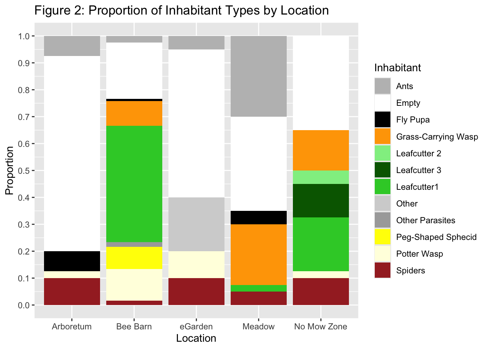
####################################################
#Daniel's original code above
## mod to run with data file
ID_freq = read.csv("Data Analysis/Actual andPresumed ID.csv")
#ID_freq = read.csv("Data Analysis/Actual andPresumed ID.csv")
ggplot(ID_freq, aes(fill=Inhabitant, y=Proportion_of_Fill, x=Location)) +
scale_fill_manual(values = c("navy","lightyellow","orange","lightgrey","brown","darkgreen"
,"pink","lightblue","black","lightgreen", "yellow", "red",
"purple", "blue", "darkgreen", "limegreen", "darkgrey",
"hotpink")) +
labs(title = "Figure 2: Proportion of Inhabitant Types by Location", x = "Location", y =
"Proportion", fill = "Inhabitant") +
geom_bar(position="fill", stat="identity", col = "black") +
scale_y_continuous(breaks=seq(0,1,by=0.1))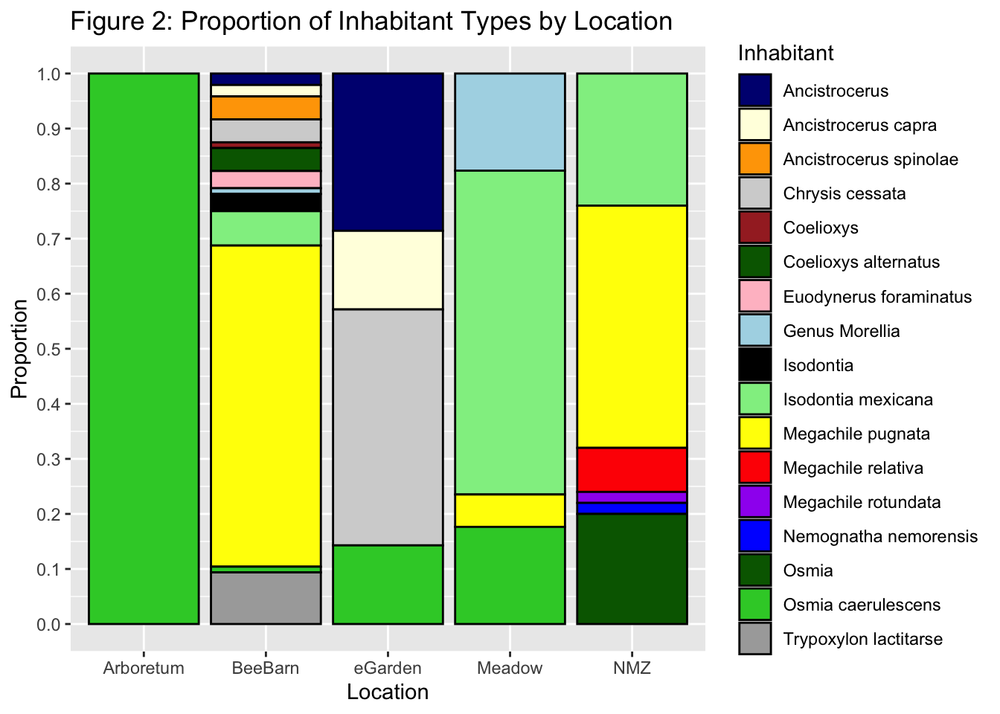
##########################Apple csv##################################################
#ID_freq_comp = read.csv("Data Analysis/Actual_presumed_complete.csv")
ID_freq_comp = read.csv("Data Analysis/Actual_presumed_complete.csv")
sample_sizes = data.frame(Location = c("Arboretum", "BeeBarn", "EGarden", "Meadow", "NoMowZone"
),
Sample_Size = c(2, 95, 7, 14, 49))
ID_freq_comp$Inhabitant<- factor(ID_freq_comp$Inhabitant,
levels = c("Chrysis cessata", "Coelioxys alternatus",
"Isodontia mexicana", "Ancistrocerus", "Euodynerus
foraminatus", "Trypoxylon lactitarse",
"Megachile pugnata", "Megachile rotundata",
"Megachile relativa", "Osmia caerulescens"))
ID_freq_comp <- merge(ID_freq_comp, sample_sizes, by = "Location", all.x = TRUE)
ID_freq_comp Location Inhabitant Proportion_of_Fill Sample_Size
1 Arboretum Ancistrocerus 0.00000000 2
2 Arboretum <NA> 0.00000000 2
3 Arboretum Isodontia mexicana 0.00000000 2
4 Arboretum Trypoxylon lactitarse 0.00000000 2
5 Arboretum Megachile pugnata 0.00000000 2
6 Arboretum Megachile relativa 0.00000000 2
7 Arboretum Megachile rotundata 0.00000000 2
8 Arboretum Osmia caerulescens 1.00000000 2
9 Arboretum Chrysis cessata 0.00000000 2
10 Arboretum Coelioxys alternatus 0.00000000 2
11 BeeBarn Ancistrocerus 0.08421053 95
12 BeeBarn <NA> 0.03157895 95
13 BeeBarn Isodontia mexicana 0.09473684 95
14 BeeBarn Trypoxylon lactitarse 0.09473684 95
15 BeeBarn Megachile pugnata 0.58947368 95
16 BeeBarn Megachile relativa 0.00000000 95
17 BeeBarn Megachile rotundata 0.00000000 95
18 BeeBarn Osmia caerulescens 0.01052632 95
19 BeeBarn Chrysis cessata 0.04210526 95
20 BeeBarn Coelioxys alternatus 0.05263158 95
21 EGarden Ancistrocerus 0.42857143 7
22 EGarden <NA> 0.00000000 7
23 EGarden Isodontia mexicana 0.00000000 7
24 EGarden Trypoxylon lactitarse 0.00000000 7
25 EGarden Megachile pugnata 0.00000000 7
26 EGarden Megachile relativa 0.00000000 7
27 EGarden Megachile rotundata 0.00000000 7
28 EGarden Osmia caerulescens 0.14285714 7
29 EGarden Chrysis cessata 0.42857143 7
30 EGarden Coelioxys alternatus 0.00000000 7
31 Meadow Ancistrocerus 0.00000000 14
32 Meadow <NA> 0.00000000 14
33 Meadow Isodontia mexicana 0.71428571 14
34 Meadow Trypoxylon lactitarse 0.00000000 14
35 Meadow Megachile pugnata 0.07142857 14
36 Meadow Megachile relativa 0.00000000 14
37 Meadow Megachile rotundata 0.00000000 14
38 Meadow Osmia caerulescens 0.21428571 14
39 Meadow Chrysis cessata 0.00000000 14
40 Meadow Coelioxys alternatus 0.00000000 14
41 NoMowZone Ancistrocerus 0.00000000 49
42 NoMowZone <NA> 0.00000000 49
43 NoMowZone Isodontia mexicana 0.24489796 49
44 NoMowZone Trypoxylon lactitarse 0.00000000 49
45 NoMowZone Megachile pugnata 0.44897959 49
46 NoMowZone Megachile relativa 0.08163265 49
47 NoMowZone Megachile rotundata 0.02040816 49
48 NoMowZone Osmia caerulescens 0.20408163 49
49 NoMowZone Chrysis cessata 0.00000000 49
50 NoMowZone Coelioxys alternatus 0.00000000 49graph = ggplot(ID_freq_comp, aes(fill=Inhabitant, y=Proportion_of_Fill, x=Location)) +
scale_fill_manual(
breaks = c("Chrysis cessata", "Coelioxys alternatus", "Isodontia mexicana", "Ancistrocerus", "Euodynerus foraminatus", "Trypoxylon lactitarse",
"Megachile pugnata", "Megachile rotundata", "Megachile relativa", "Osmia caerulescens"),
values = c(
"Chrysis cessata" = "#480154FF",
"Coelioxys alternatus" = "#481567FF",
"Isodontia mexicana" = "#1F968BFF",
"Ancistrocerus" = "#287D8EFF",
"Euodynerus foraminatus" = "#33638DFF",
"Trypoxylon lactitarse" = "#404788FF",
"Megachile pugnata" = "#55C667FF",
"Megachile rotundata" = "lightgreen",
"Megachile relativa" = "#FDE725FF",
"Osmia caerulescens" = "#DCE319FF"
)
)+
labs(title = "Proportion of Inhabitant Types by Location", x = "Location", y = "Proportion", fill = "Inhabitant") +
#To make it sidebyside, change position to "dodge" and to make it a percentage change position to "fill", stacked is "stack"
geom_bar(position="fill", stat="identity", col = "white") +
#For scaling the tickmarks along the axes
scale_y_continuous(breaks=seq(0,1,by=0.1))+
theme_minimal()
for (i in 1:nrow(sample_sizes)) {
graph <- graph + annotate("text", x = sample_sizes$Location[i], y = -0.04, label = sample_sizes$Sample_Size[i], vjust = 1.5, size = 3.6)
}
print(graph)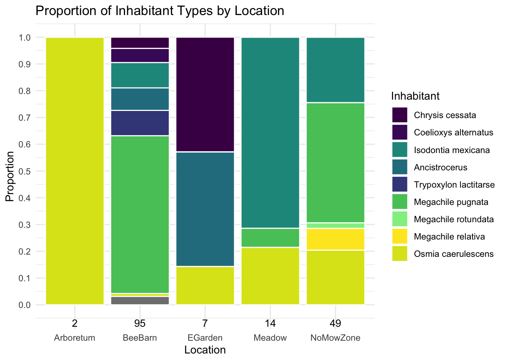
fill_2023=read.csv("Data Analysis/2023_bee tube first fill data_no WF.csv")
fill_2023 = na.omit(fill_2023)
fill_2024=read.csv("Data Analysis/Week_of_First_FIll_for_CSV - Sheet1.csv")
fill_2025=read.csv("Data Analysis/Week_of_First_Fill_2025 - Sheet1.csv")
##Sophia's mod for 2025 fill type#####################################################################################
#ID_freq_comp = read.csv("Data Analysis/Proportion_of_Fill_By_Location - Sheet1.csv")
ID_freq_comp = read.csv("Data Analysis/Proportion_of_Fill_By_Location - Sheet1.csv")
sample_sizes = data.frame(Location = c("Arboretum", "ISC/Greenhouse", "No Mow Zone", "EGarden", "Island Preserve"),
Sample_Size = c(140, 40, 20, 20, 160))
ID_freq_comp <- merge(ID_freq_comp, sample_sizes, by = "Location", all.x = TRUE)
graph = ggplot(ID_freq_comp, aes(fill=Fill_Type, y=Proportion_of_Fill, x=Location)) +
#Colors below must be listed in alphabetical order of the categories in the key
scale_fill_manual(values = c("lightyellow","black","darkgreen","lightgreen","grey","orange","yellow")) +
labs(title = "Figure 2: Proportion of Fill Types by Location", x = "Location", y = "Proportion", fill = "Fill_Type") +
#To make it sidebyside, change position to "dodge" and to make it a percentage change position to "fill", stacked is "stack"
geom_bar(position="fill", stat="identity", col = "black") +
#For scaling the tickmarks along the axes
scale_y_continuous(breaks=seq(0,1,by=0.1))
for (i in 1:nrow(sample_sizes)) {
graph <- graph + annotate("text", x = sample_sizes$Location[i], y = -0.04, label = sample_sizes$Sample_Size[i], vjust = 1.5, size = 3.6)
}
print(graph)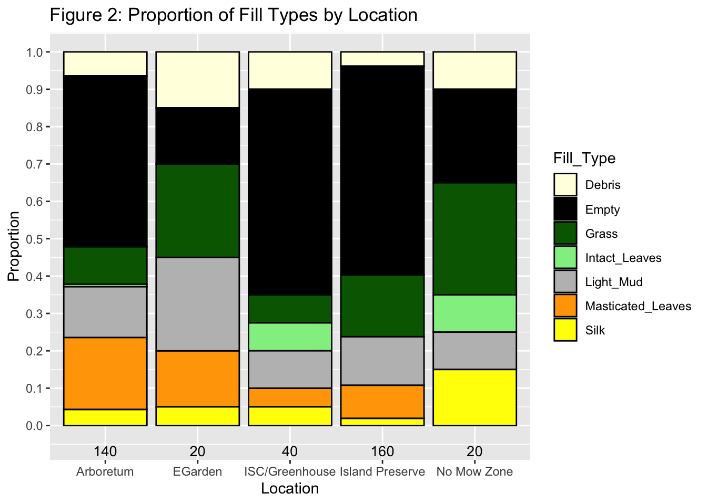
######Sophias Clean 2025 Fill Proportion##########################################################################################
library(ggthemes)
ID_freq_comp = read.csv("Data Analysis/Proportion_of_Fill_By_Location - 2025-2026.csv")
sample_sizes = data.frame(Location = c("Arboretum", "ISC/Greenhouse", "No Mow Zone", "EGarden", "Island Preserve"),
Sample_Size = c(140, 40, 20, 20, 160))
ID_freq_comp$Fill_Type <- factor(ID_freq_comp$Fill_Type,
levels = c("Empty", "Debris", "Silk", "Grass", "Light_Mud",
"Intact_Leaves", "Masticated_Leaves"))
ID_freq_comp Location Fill_Type Proportion_of_Fill
1 Arboretum Masticated_Leaves 0.200000000
2 Arboretum Intact_Leaves 0.007142857
3 Arboretum Light_Mud 0.100000000
4 Arboretum Grass 0.085714286
5 Arboretum Silk 0.014285714
6 Arboretum Debris 0.071428571
7 Arboretum Empty 0.521428571
8 ISC/Greenhouse Masticated_Leaves 0.075000000
9 ISC/Greenhouse Intact_Leaves 0.075000000
10 ISC/Greenhouse Light_Mud 0.125000000
11 ISC/Greenhouse Grass 0.000000000
12 ISC/Greenhouse Silk 0.050000000
13 ISC/Greenhouse Debris 0.125000000
14 ISC/Greenhouse Empty 0.550000000
15 No Mow Zone Masticated_Leaves 0.000000000
16 No Mow Zone Intact_Leaves 0.100000000
17 No Mow Zone Light_Mud 0.100000000
18 No Mow Zone Grass 0.200000000
19 No Mow Zone Silk 0.200000000
20 No Mow Zone Debris 0.100000000
21 No Mow Zone Empty 0.300000000
22 EGarden Masticated_Leaves 0.150000000
23 EGarden Intact_Leaves 0.000000000
24 EGarden Light_Mud 0.250000000
25 EGarden Grass 0.250000000
26 EGarden Silk 0.100000000
27 EGarden Debris 0.150000000
28 EGarden Empty 0.100000000
29 Island Preserve Masticated_Leaves 0.018750000
30 Island Preserve Intact_Leaves 0.006250000
31 Island Preserve Light_Mud 0.125000000
32 Island Preserve Grass 0.162500000
33 Island Preserve Silk 0.025000000
34 Island Preserve Debris 0.075000000
35 Island Preserve Empty 0.587500000
Tally.of.Fill Number.Filled Total.Tubes Second.count
1 IIIIIIIIIIIIIIIIIIIIIIIIIIII 28 140 NA
2 I 1 140 NA
3 IIIIIIIIIIIIII 14 140 NA
4 IIIIIIIIIIII 12 140 NA
5 II 2 140 NA
6 IIIIIIIIII 10 140 NA
7 73 140 NA
8 III 3 40 NA
9 III 3 40 NA
10 IIIII 5 40 NA
11 0 40 NA
12 II 2 40 NA
13 IIIII 5 40 NA
14 22 40 NA
15 0 20 NA
16 II 2 20 NA
17 II 2 20 NA
18 IIII 4 20 NA
19 IIII 4 20 NA
20 II 2 20 NA
21 6 20 NA
22 III 3 20 NA
23 0 20 NA
24 IIIII 5 20 NA
25 IIIII 5 20 NA
26 II 2 20 NA
27 III 3 20 NA
28 2 20 NA
29 II 3 160 3
30 I 1 160 1
31 IIIIIIIIII(10)IIIIIIIII 20 160 20
32 IIIIIIIIII(10)II 26 160 26
33 II 4 160 4
34 IIIIIIIIII(10)II 12 160 12
35 94 160 NA#Previous step allows you to pick the order of the variables
ID_freq_comp <- merge(ID_freq_comp, sample_sizes, by = "Location", all.x = TRUE)
graph = ggplot(ID_freq_comp, aes(fill=Fill_Type, y=Proportion_of_Fill, x=Location)) +
#Colors below must be listed in alphabetical order of the categories in the key
scale_fill_manual(breaks = c("Empty", "Debris", "Silk", "Grass","Light_Mud",
"Intact_Leaves", "Masticated_Leaves"),
values = c(
Empty = "black",
Debris = "grey",
Silk = "white",
Grass = "#1F968BFF",
Light_Mud = "#33638DFF",
Intact_Leaves = "#95D840FF",
Masticated_Leaves = "#DCE319FF")) +
labs(title = "Proportion of Fill Types by Location", x = "Location", y = "Proportion", fill = "Fill_Type") +
#To make it sidebyside, change position to "dodge" and to make it a percentage change position to "fill", stacked is "stack"
geom_bar(position="fill", stat="identity", col = "black") +
#For scaling the tickmarks along the axes
scale_y_continuous(breaks=seq(0,1,by=0.1))+
theme_minimal()
for (i in 1:nrow(sample_sizes)) {
graph <- graph + annotate("text", x = sample_sizes$Location[i], y = -0.04, label = sample_sizes$Sample_Size[i], vjust = 1.5, size = 3.6)
}
print(graph)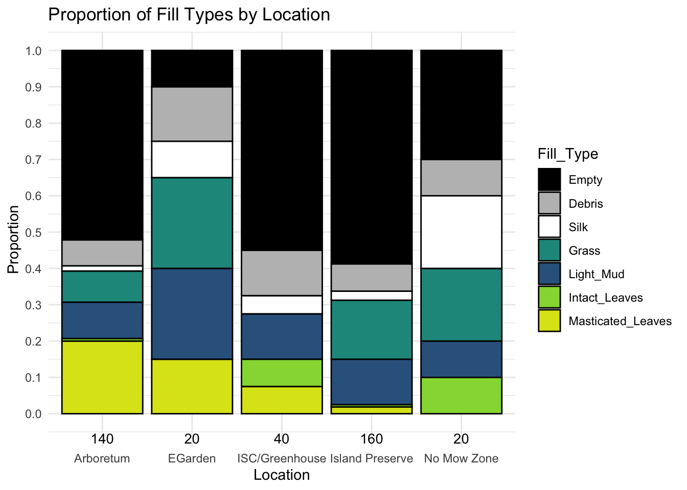
#Used color blind friendly viridis_d
c("#FDE725FF","#29AF7FFF","#95D840FF","#33638DFF","#481567FF", "#DCE319FF")[1] "#FDE725FF" "#29AF7FFF" "#95D840FF" "#33638DFF" "#481567FF" "#DCE319FF"####Sophia and Hanna type by Location###################################################
library(ggplot2)
ID_freq_2025_clean = read.csv("Data Analysis/Bee_Occupants_for_ESA_poster_final.csv")
sample_sizes = data.frame(Location = c("Arboretum", "ISC/Greenhouse", "No Mow Zone", "EGarden", "Island Preserve"),
Sample_Size = c(140, 40, 20, 20, 160))
ID_freq_2025_clean$Inhabitant <- factor(ID_freq_2025_clean$Inhabitant,
levels = c("Parasite", "Grass Wasp",
"Potter Wasp", "Square-headed Wasp",
"Unknown Wasp","Leafcutter- Mp",
"Leafcutter- Leaf", "Mason Bee",
"Small Cell Bee"))
ggplot(ID_freq_2025_clean, aes(fill=Inhabitant, y=Proportion_of_Fill, x=Location)) +
scale_fill_manual(breaks = c("Parasite", "Grass Wasp", "Potter Wasp", "Square-headed Wasp",
"Unknown Wasp",
"Leafcutter- Mp", "Leafcutter- Leaf", "Mason Bee", "Small Cell
Bee"),
values = c(
"Parasite" = "#481567FF",
"Grass Wasp" = "#1F968BFF",
"Potter Wasp" = "#33638DFF",
"Square-headed Wasp" = "#404788FF",
"Unknown Wasp" = "white",
"Leafcutter- Mp" = "#55C667FF",
"Leafcutter- Leaf" = "#B8DE29FF",
"Mason Bee" = "#DCE319FF",
"Small Cell Bee" = "#FDE725FF"))+
labs(title = "Proportion of Inhabitant Types by Location", x = "Location", y = "Proportion",
fill = "Inhabitant") +
#To make it sidebyside, change position to "dodge" and to make it a percentage change position to "fill", stacked is "stack"
geom_bar(position="fill", stat="identity", col = "black") +
#For scaling the tickmarks along the axes
scale_y_continuous(breaks=seq(0,1,by=0.1))+
theme_minimal()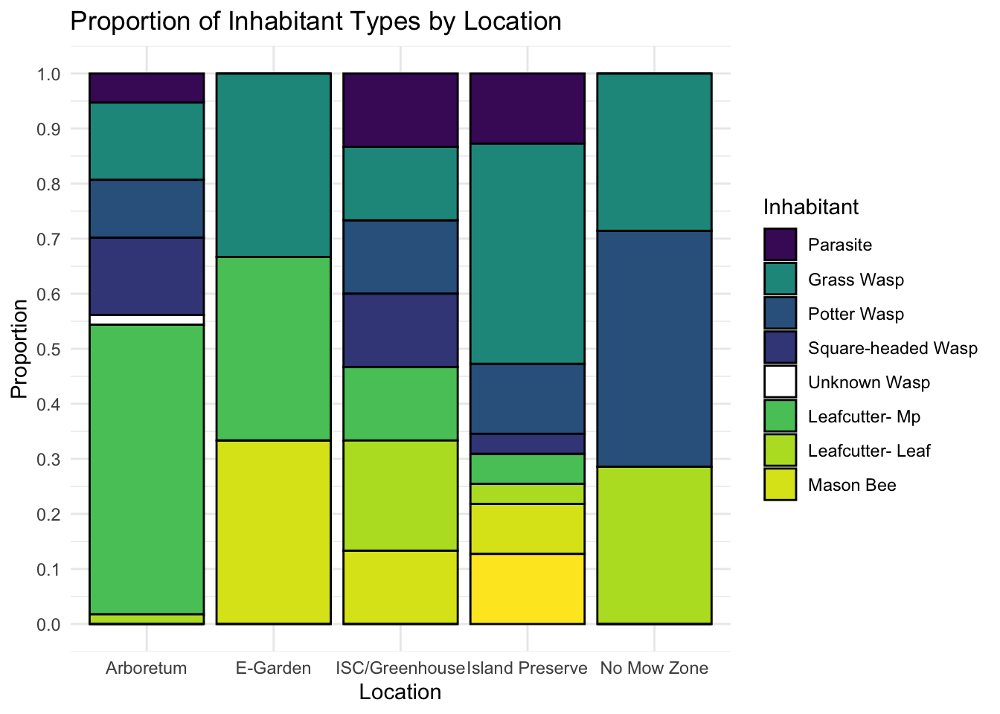
#Used color blind friendly viridis_d
c("#FDE725FF","#29AF7FFF","#95D840FF","#33638DFF","#481567FF", "#DCE319FF", "#B8DE29FF", "#73D055FF")[1] "#FDE725FF" "#29AF7FFF" "#95D840FF" "#33638DFF" "#481567FF" "#DCE319FF"
[7] "#B8DE29FF" "#73D055FF"Date of First Fill
# create a dataset
#Big label on the bottom, for each "rep", the first thing before the comma is what to call it (in this case week number but it could be a label too) and then the second is the number of catagories on the side
Week <- c(rep(1 , 5) , rep(2 , 5) , rep(3 , 5) , rep(4 , 5) , rep(5 , 5) , rep(6 , 5) , rep(7 , 5) , rep(8 , 5) , rep(9 , 5) , rep(10 , 5) , rep(11 , 5) , rep(12 , 5) , rep(13 , 5) , rep(14 , 5) , rep(15 , 5) , rep(16 , 5) , rep(17 , 5) , rep(18 , 5) , rep(19 , 5) , rep(20 , 5))
#The different types of bars (will be on the key on the side), the number at the end is the number of reps above
Fill_Type <- rep(c("White Debris" , "Masticated Leaves" , "Light Mud" , "Leaves" , "Grass") , 20)
#whatever the x axis is, list the data points in order grouped by that. Within each group, they should be ordered in the order that the fill categories are imputed in. So for example, since weeks are on the bottom, list week ones data point first, in the different types in order above, then do it for week two, and so on.
Number_of_Tubes_First_Filled <- c(0,0,0,0,0,0,0,0,0,0,1,0,4,0,0,0,2,1,0,0,1,2,1,0,0,7,4,5,0,0,2,8,4,0,0,0,1,3,0,3,0,6,5,0,2,0,0,6,0,3,1,0,6,1,2,1,0,1,7,0,0,0,0,14,2,1,0,0,11,7,0,0,0,9,1,0,0,0,8,2,0,0,0,4,4,0,0,0,3,2,0,0,0,0,1,0,0,0,0,0)
data <- data.frame(Week,Fill_Type,Number_of_Tubes_First_Filled)
# Grouped
ggplot(data, aes(fill=Fill_Type, y=Number_of_Tubes_First_Filled, x=Week)) +
#Colors below must be listed in alphabetical order of the categories in the key
scale_fill_manual(values = c("orange","lightgreen","lightyellow","limegreen","grey")) +
labs(title = "Figure 1: Date of First Fill by Type", x = "Week", y = "Number of Tubes First Filled", fill = "Fill Type") +
#To make it sidebyside, change position to "dodge" and to make it a percentage change position to "fill", stacked is "stack"
geom_bar(position="stack", stat="identity") +
#For scaling the tickmarks along the axes
scale_x_continuous(breaks=seq(0,20,by=1)) +
scale_y_continuous(breaks=seq(0,20,by=1))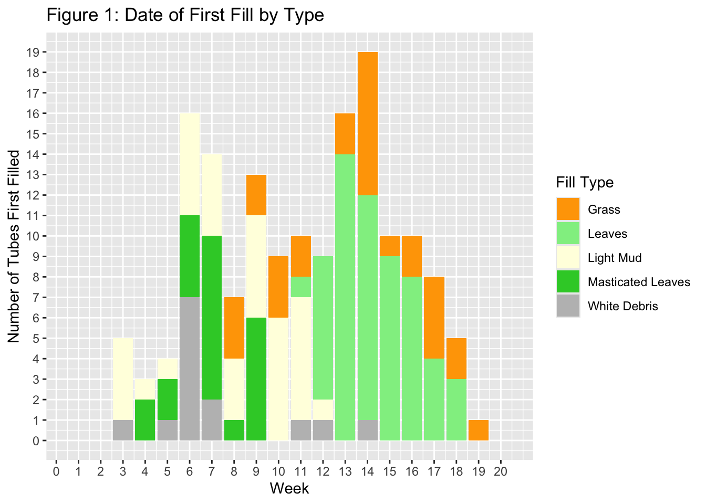
######################################################
#Daniel's original code aboveFill Type
library(tidyverse)
fill_inhabitant_labels <- tibble(
Fill_Type = c(
"Grass",
"Grass",
"Grass",
"Masticated_Leaves",
"Masticated_Leaves",
"Intact_Leaves",
"Intact_Leaves",
"Light_Mud",
"Silk",
"Debris",
"Empty"
),
Inhabitant = c(
"Grass Wasp",
"Square-headed Wasp",
"Potter Wasp",
"Leafcutter- Mp",
"Leafcutter- Leaf",
"Leafcutter- Mp",
"Leafcutter- Leaf",
"Mason Bee",
"Mason Bee",
"Parasite",
NA_character_
),
label_note = c(
"Primary grass user",
"Common in grass-filled nests",
"Sometimes uses grass",
"Primary masticated leaf user",
"Uses leaf cuttings",
"Also uses intact leaves",
"Uses intact leaf cuttings",
"Primary mud user",
"Uses silk as plug/lining",
"Associated with debris-filled cells",
"No known primary inhabitant"
)
)
# label_positions <- fill_2023 %>%
# group_by(Week) %>%
# arrange(Week, Fill_Type) %>%
# mutate(
# ymax = cumsum(Number_of_Tubes_First_Filled),
# ymin = ymax - Number_of_Tubes_First_Filled,
# ymid = (ymax + ymin) / 2
# ) %>%
# ungroup() %>%
# # Join your inhabitant label lookup
# left_join(fill_inhabitant_labels, by = "Fill_Type") %>%
# # Only label segments large enough to be readable (adjust threshold as needed)
# filter(Number_of_Tubes_First_Filled >= 2, !is.na(Inhabitant))
# Collapse multiple inhabitants per fill type into one label
fill_labels_collapsed <- fill_inhabitant_labels %>%
filter(!is.na(Inhabitant)) %>%
group_by(Fill_Type) %>%
summarise(Inhabitant = paste(Inhabitant, collapse = "\n"), .groups = "drop")
# Now the join is clean — one row per Fill_Type
label_positions <- fill_2023 %>%
group_by(Week) %>%
arrange(Week, Fill_Type) %>%
mutate(
ymax = cumsum(Number_of_Tubes_First_Filled),
ymin = ymax - Number_of_Tubes_First_Filled,
ymid = (ymax + ymin) / 2
) %>%
ungroup() %>%
left_join(fill_labels_collapsed, by = "Fill_Type") %>%
filter(Number_of_Tubes_First_Filled >= 2, !is.na(Inhabitant))my_colors <- c(
"Grass" = "darkgreen",
"Leaves" = "#95D840FF",
"Intact_Leaves" = "#29AF7FFF",
"Masticated_Leaves" = "#FDE725FF",
"Light_Mud" = "#33638DFF",
"Debris" = "orange",
"Silk" = "grey"
)
my_labels <- c(
"Grass" = "Grass",
"Leaves" = "Leaves",
"Intact_Leaves" = "Intact Leaves",
"Masticated_Leaves" = "Masticated Leaves",
"Light_Mud" = "Light Mud",
"Debris" = "Debris",
"Silk" = "Spider Silk"
)
mytheme <- theme(
plot.title = element_text(face = "bold", family = "Times New Roman", size = 20),
axis.title = element_text(face = "italic", family = "Times New Roman"),
axis.text = element_text(family = "Times New Roman"),
plot.background = element_rect(fill = "white"),
panel.grid.minor = element_blank(),
panel.background = element_rect(fill = NA, color = "black"),
# axis.line.y = element_line(color = "black", linewidth = 0.5),
panel.grid.major.y = element_line(color = "grey90", linewidth = 0.5),
panel.grid.major.x = element_blank(),
axis.line.y = element_line(color = "black", linewidth = 0.5),
legend.title = element_text(family = "Times New Roman", face = "bold"),
# for faceted graphs
strip.background = element_rect(fill = "grey95", color = "black"),
strip.text = element_text(color = "black", face = "bold"),
)
fill_2023<- data|>
mutate(
Fill_Type = ifelse(Fill_Type == "WhiteDebris", "Debris", Fill_Type),
Fill_Type = ifelse(Fill_Type == "Masticated Leaves", "Masticated_Leaves", Fill_Type),
Fill_Type = ifelse(Fill_Type == "Light Mud", "Light_Mud", Fill_Type))
ggplot(fill_2023, aes(fill = Fill_Type,
y = Number_of_Tubes_First_Filled,
x = Week)) +
scale_fill_manual(values = my_colors, labels = my_labels) +
labs(
title = "Figure 1a. Date of First Fill in 2023 by Type",
x = "Week", y = "Number of Tubes First Filled",
fill = "Fill Type"
) +
geom_bar(position = "stack", stat = "identity", col = "black") +
# Dynamic labels from label_positions
geom_text(
data = label_positions,
aes(x = Week, y = ymid, label = Inhabitant),
inherit.aes = FALSE,
size = 2.8,
fontface = "italic",
color = "black",
fill = "white",# or "black" depending on fill darkness
check_overlap = TRUE # suppresses overlapping labels automatically
) +
scale_x_continuous(breaks = seq(0, 20, by = 1)) +
scale_y_continuous(breaks = seq(0, 27, by = 1)) +
mythemeWarning in geom_text(data = label_positions, aes(x = Week, y = ymid, label =
Inhabitant), : Ignoring unknown parameters: `fill`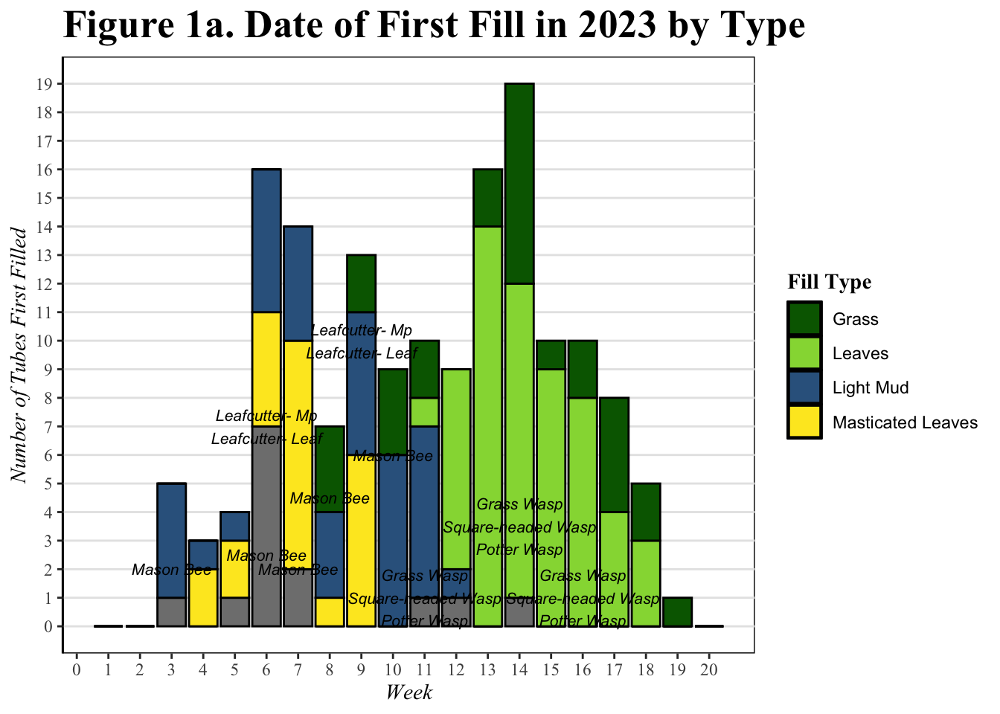
fill_2023 Week Fill_Type Number_of_Tubes_First_Filled
1 1 White Debris 0
2 1 Masticated_Leaves 0
3 1 Light_Mud 0
4 1 Leaves 0
5 1 Grass 0
6 2 White Debris 0
7 2 Masticated_Leaves 0
8 2 Light_Mud 0
9 2 Leaves 0
10 2 Grass 0
11 3 White Debris 1
12 3 Masticated_Leaves 0
13 3 Light_Mud 4
14 3 Leaves 0
15 3 Grass 0
16 4 White Debris 0
17 4 Masticated_Leaves 2
18 4 Light_Mud 1
19 4 Leaves 0
20 4 Grass 0
21 5 White Debris 1
22 5 Masticated_Leaves 2
23 5 Light_Mud 1
24 5 Leaves 0
25 5 Grass 0
26 6 White Debris 7
27 6 Masticated_Leaves 4
28 6 Light_Mud 5
29 6 Leaves 0
30 6 Grass 0
31 7 White Debris 2
32 7 Masticated_Leaves 8
33 7 Light_Mud 4
34 7 Leaves 0
35 7 Grass 0
36 8 White Debris 0
37 8 Masticated_Leaves 1
38 8 Light_Mud 3
39 8 Leaves 0
40 8 Grass 3
41 9 White Debris 0
42 9 Masticated_Leaves 6
43 9 Light_Mud 5
44 9 Leaves 0
45 9 Grass 2
46 10 White Debris 0
47 10 Masticated_Leaves 0
48 10 Light_Mud 6
49 10 Leaves 0
50 10 Grass 3
51 11 White Debris 1
52 11 Masticated_Leaves 0
53 11 Light_Mud 6
54 11 Leaves 1
55 11 Grass 2
56 12 White Debris 1
57 12 Masticated_Leaves 0
58 12 Light_Mud 1
59 12 Leaves 7
60 12 Grass 0
61 13 White Debris 0
62 13 Masticated_Leaves 0
63 13 Light_Mud 0
64 13 Leaves 14
65 13 Grass 2
66 14 White Debris 1
67 14 Masticated_Leaves 0
68 14 Light_Mud 0
69 14 Leaves 11
70 14 Grass 7
71 15 White Debris 0
72 15 Masticated_Leaves 0
73 15 Light_Mud 0
74 15 Leaves 9
75 15 Grass 1
76 16 White Debris 0
77 16 Masticated_Leaves 0
78 16 Light_Mud 0
79 16 Leaves 8
80 16 Grass 2
81 17 White Debris 0
82 17 Masticated_Leaves 0
83 17 Light_Mud 0
84 17 Leaves 4
85 17 Grass 4
86 18 White Debris 0
87 18 Masticated_Leaves 0
88 18 Light_Mud 0
89 18 Leaves 3
90 18 Grass 2
91 19 White Debris 0
92 19 Masticated_Leaves 0
93 19 Light_Mud 0
94 19 Leaves 0
95 19 Grass 1
96 20 White Debris 0
97 20 Masticated_Leaves 0
98 20 Light_Mud 0
99 20 Leaves 0
100 20 Grass 0ggplot(fill_2023, aes(fill = Fill_Type,
y = Number_of_Tubes_First_Filled,
x = Week)) +
scale_fill_manual(values = my_colors, labels = my_labels) +
labs(
title = "Figure 1a. Date of First Fill in 2023 by Type",
x = "Week", y = "Number of Tubes First Filled",
fill = "Fill Type"
) +
geom_bar(position = "stack", stat = "identity", col = "black") +
# --- Mason Bee (Light_Mud) --- angled arrow, shifted left
annotate("segment", x = 4, xend = 5, y = -1.5, yend = -0.2,
arrow = arrow(length = unit(0.15, "cm")), color = "black") +
annotate("text", x = 2, y = -2.5, label = "Mason Bee",
size = 2.8, fontface = "italic", hjust = 0.5, vjust = 1) +
# --- Leafcutter- Mp & Leafcutter- Leaf (Masticated_Leaves) ---
annotate("segment", x = 7, xend = 7, y = 0, yend = -1.5,
arrow = arrow(length = unit(0.15, "cm")), color = "black") +
annotate("text", x = 7, y = -2.5, label = "Leafcutter- Mp\nLeafcutter- Leaf",
size = 2.8, fontface = "italic", hjust = 0.5, vjust = 1) +
# --- Grass Wasp, Square-headed, Potter (Grass, dark green) ---
annotate("segment", x = 14, xend = 15, y = 0, yend = -1.5,
arrow = arrow(length = unit(0.15, "cm")), color = "black") +
annotate("text", x = 18, y = -1.5,
label = "Grass Wasp\nSquare-headed Wasp\nPotter Wasp",
size = 2.8, fontface = "italic", hjust = 0.5, vjust = 1) +
scale_x_continuous(breaks = seq(0, 20, by = 1)) +
scale_y_continuous(breaks = seq(0, 27, by = 1)) +
coord_cartesian(ylim = c(-6, 19), clip = "off") +
mytheme +
theme(plot.margin = margin(t = 5, r = 5, b = 60, l = 5, unit = "pt"))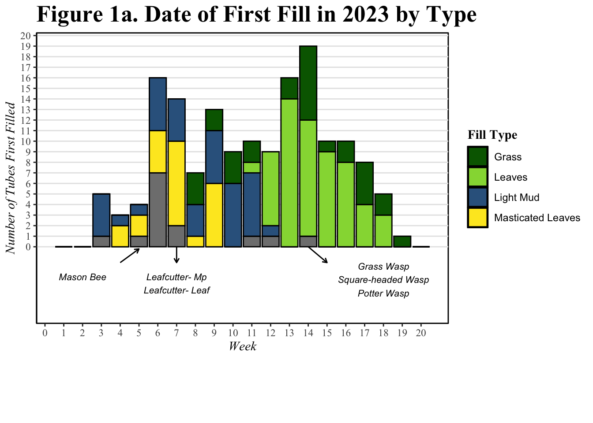
Element & Theme Corrections
# unique(fill_2025$Fill_Type)
# unique(fill_2024$Fill_Type)
# unique(fill_2023$Fill_Type)
fill_2023 <- fill_2023 %>%
mutate(Fill_Type = fct_relevel(Fill_Type,
"Grass", "Leaves", "Masticated_Leaves",
"Light_Mud", "Debris", "Silk"))Warning: There was 1 warning in `mutate()`.
ℹ In argument: `Fill_Type = fct_relevel(...)`.
Caused by warning:
! 2 unknown levels in `f`: Debris and Silkfill_2024 <- fill_2024 %>%
mutate(Fill_Type = fct_relevel(Fill_Type,
"Grass", "Leaves", "Masticated_Leaves",
"Light_Mud", "Debris", "Silk"))Warning: There was 1 warning in `mutate()`.
ℹ In argument: `Fill_Type = fct_relevel(...)`.
Caused by warning:
! 1 unknown level in `f`: Leavesfill_2025 <- fill_2025 %>%
mutate(Fill_Type = fct_relevel(Fill_Type,
"Grass", "Leaves", "Masticated_Leaves",
"Light_Mud", "Debris", "Silk"))Warning: There was 1 warning in `mutate()`.
ℹ In argument: `Fill_Type = fct_relevel(...)`.
Caused by warning:
! 1 unknown level in `f`: Leaves# Colors to use
# Define your color palette
unique(Fill_Type)[1] "White Debris" "Masticated Leaves" "Light Mud"
[4] "Leaves" "Grass" my_colors <- c(
"Grass" = "darkgreen",
"Leaves" = "#95D840FF",
"Intact_Leaves" = "#29AF7FFF",
"Masticated_Leaves" = "#FDE725FF",
"Light_Mud" = "#33638DFF",
"Debris" = "grey",
"Silk" = "white"
)
my_labels <- c(
"Grass" = "Grass",
"Leaves" = "Leaves",
"Intact_Leaves" = "Intact Leaves",
"Masticated_Leaves" = "Masticated Leaves",
"Light_Mud" = "Light Mud",
"Debris" = "Debris",
"Silk" = "Spider Silk"
)
mytheme <- theme(
plot.title = element_text(face = "bold", family = "Times New Roman", size = 20),
axis.title = element_text(face = "italic", family = "Times New Roman"),
axis.text = element_text(family = "Times New Roman"),
plot.background = element_rect(fill = "white"),
panel.grid.minor = element_blank(),
panel.background = element_rect(fill = NA, color = "black"),
# axis.line.y = element_line(color = "black", linewidth = 0.5),
panel.grid.major.y = element_line(color = "grey90", linewidth = 0.5),
panel.grid.major.x = element_blank(),
axis.line.y = element_line(color = "black", linewidth = 0.5),
legend.title = element_text(family = "Times New Roman", face = "bold"),
# for faceted graphs
strip.background = element_rect(fill = "grey95", color = "black"),
strip.text = element_text(color = "black", face = "bold"),
)Date Of First Fill Mod.r
##JA altered to work with data file - remove white debris from file
fill_2023 = na.omit(fill_2023)
# Grouped
#####Code for 2023 FillType No White Debris###############################################
ggplot(fill_2023, aes(fill=Fill_Type, y=Number_of_Tubes_First_Filled, x=Week)) +
scale_fill_manual(values = my_colors, labels = my_labels) +
labs(title = "Figure 1a. Date of First Fill in 2023 by Type",
x = "Week", y = "Number of Tubes First Filled",
fill = "Fill Type")+
geom_bar(position="stack", stat="identity", col = "black") +
scale_x_continuous(breaks=seq(0,20,by=1)) +
scale_y_continuous(breaks=seq(0,27,by=1)) +
mytheme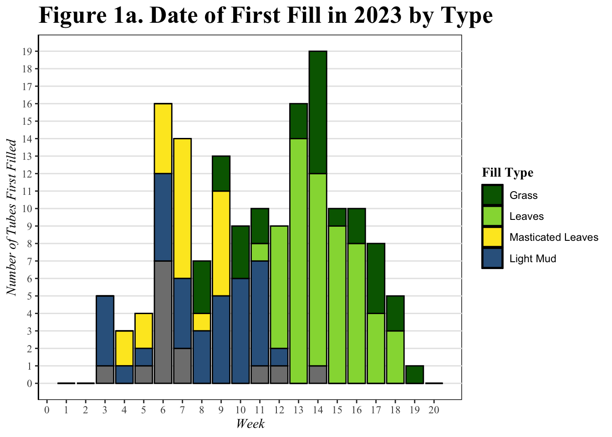
GGTEXT for Wasps/Bee Type
SpeciesFill <- c(
"Grass Carrying Wasps" = "Grass",
"Potter Wasps" = "Light_Mud",
"Square Headed Wasps" = "Light_Mud"
)#####Sophias Code for 2024 Fill Type##########################################################
fill_2024=read.csv("Data Analysis/Week_of_First_FIll_for_CSV - Sheet1.csv")
ggplot(fill_2024, aes(fill=Fill_Type, y=Number_of_Tubes_First.Filled, x=Week)) +
scale_fill_manual(values = my_colors, labels = my_labels) +
labs(title = "Figure 1b. Date of First Fill in 2024 by Type", x = "Week", y = "Number of Tubes First Filled", fill = "Fill Type") +
geom_bar(position="stack", stat="identity", col = "black") +
scale_x_continuous(breaks=seq(0,20,by=1)) +
scale_y_continuous(breaks=seq(0,27,by=1))+
theme_minimal() +
mytheme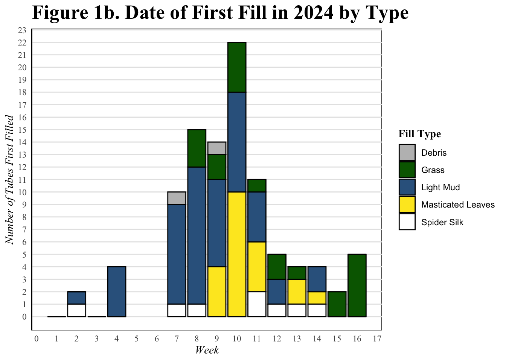
# c("#FDE725FF","#29AF7FFF","#95D840FF","#33638DFF","#481567FF", "#DCE319FF")unique(Fill_Type)[1] "White Debris" "Masticated Leaves" "Light Mud"
[4] "Leaves" "Grass" #####Sophias Code for 2025 Fill Type##########################################################
library(ggplot2)
fill_2025=read.csv("Data Analysis/Week_of_First_Fill_2025 - Sheet1.csv")
ggplot(fill_2025, aes(fill= Fill_Type, y=Number_of_Tubes_First.Filled, x=Week)) +
#Colors below must be listed in alphabetical order of the categories in the key
scale_fill_manual(values = my_colors, labels = my_labels) +
labs(title = "Figure 1b. Date of First Fill in 2025 by Type", x = "Week", y = "Number of Tubes First Filled", fill = "Fill Type") +
geom_bar(position="stack", stat="identity", col = "black") +
scale_x_continuous(breaks=seq(0,20,by=1)) +
scale_y_continuous(breaks=seq(0,27,by=1)) +
mytheme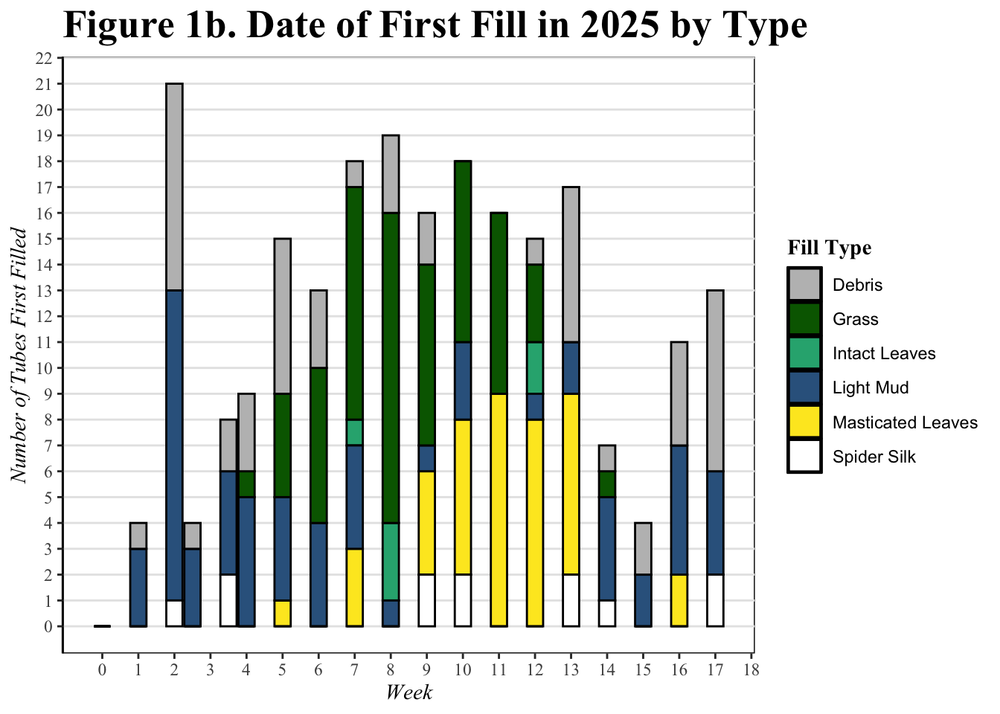
######Sophias Code for 2025 Fill Type Clean ########################################################
library(ggplot2)
fill_2025_clean=read.csv("Data Analysis/Week_of_First_FIll_2025 - 2026_cleaned.csv")
ggplot(fill_2025_clean, aes(fill=Fill_Type, y=Number_of_Tubes_First.Filled, x=Week)) +
#Colors below must be listed in alphabetical order of the categories in the key
scale_fill_manual(values = my_colors,, labels = my_labels) +
labs(title = "Figure 1c. Date of First Fill in 2025 by Type", x = "Week", y = "Number of Tubes First Filled", fill = "Fill Type") +
#To make it sidebyside, change position to "dodge" and to make it a percentage change position to "fill", stacked is "stack"
geom_bar(position="stack", stat="identity", col = "black") +
#For scaling the tickmarks along the axes
scale_x_continuous(breaks=seq(0,20,by=1)) +
scale_y_continuous(breaks=seq(0,27,by=1))+
theme_minimal() +
mythemeWarning: Removed 58 rows containing missing values or values outside the scale range
(`geom_bar()`).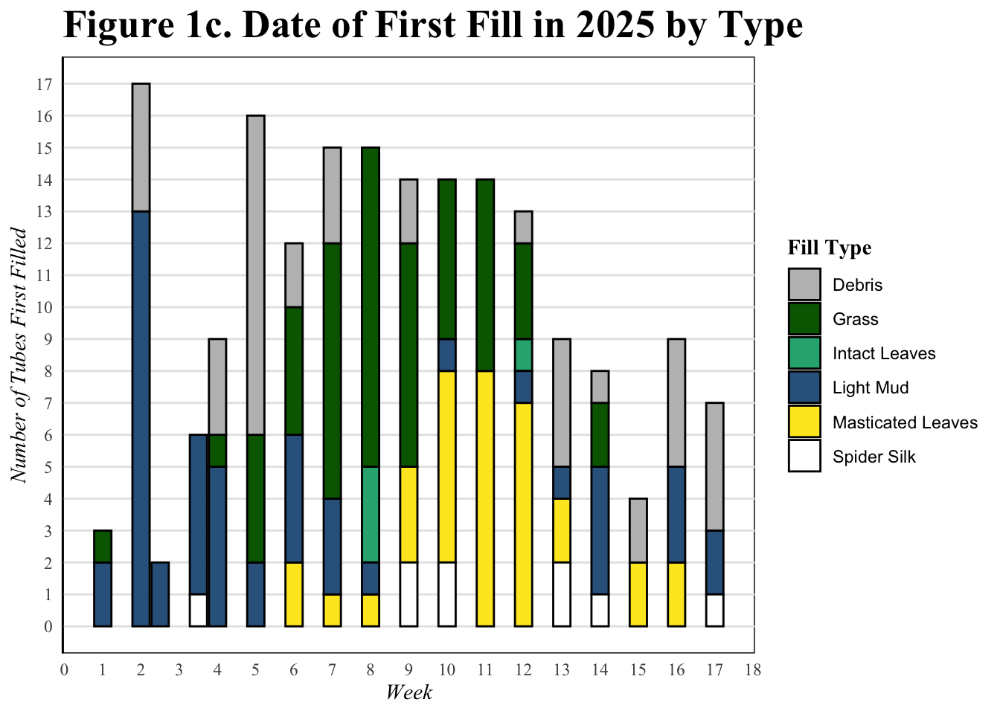
#Other color blind friendly palettes that could be useful
library(RColorBrewer)
display.brewer.all(colorblindFriendly = TRUE)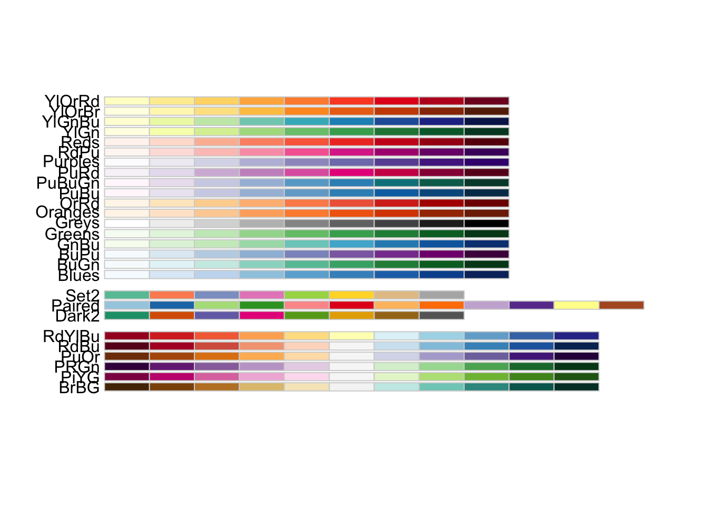
#####Sophia's Edit of Daniel's 2023 Code to Match Color Code##################################
library(ggplot2)
Week <- c(rep(1 , 5) , rep(2 , 5) , rep(3 , 5) , rep(4 , 5) , rep(5 , 5) , rep(6 , 5) , rep(7 , 5) , rep(8 , 5) , rep(9 , 5) , rep(10 , 5) , rep(11 , 5) , rep(12 , 5) , rep(13 , 5) , rep(14 , 5) , rep(15 , 5) , rep(16 , 5) , rep(17 , 5) , rep(18 , 5) , rep(19 , 5) , rep(20 , 5))
#The different types of bars (will be on the key on the side), the number at the end is the number of reps above
Fill_Type <- rep(c("WhiteDebris" , "Masticated_Leaves" , "Light_Mud" , "Leaves" , "Grass") , 20)
#whatever the x axis is, list the data points in order grouped by that. Within each group, they should be ordered in the order that the fill categories are imputed in. So for example, since weeks are on the bottom, list week ones data point first, in the different types in order above, then do it for week two, and so on.
Number_of_Tubes_First_Filled <- c(0,0,0,0,0,0,0,0,0,0,1,0,4,0,0,0,2,1,0,0,1,2,1,0,0,7,4,5,0,0,2,8,4,0,0,0,1,3,0,3,0,6,5,0,2,0,0,6,0,3,1,0,6,1,2,1,0,1,7,0,0,0,0,14,2,1,0,0,11,7,0,0,0,9,1,0,0,0,8,2,0,0,0,4,4,0,0,0,3,2,0,0,0,0,1,0,0,0,0,0)
data <- data.frame(Week,Fill_Type,Number_of_Tubes_First_Filled)
# Grouped
ggplot(data, aes(fill=Fill_Type, y=Number_of_Tubes_First_Filled, x=Week)) +
#Colors below must be listed in alphabetical order of the categories in the key
scale_fill_manual(values = my_colors,, labels = my_labels) +
labs(title = "Figure 1a: Date of First Fill in 2023 by Type", x = "Week", y = "Number of Tubes First Filled", fill = "Fill Type") +
#To make it sidebyside, change position to "dodge" and to make it a percentage change position to "fill", stacked is "stack"
geom_bar(position="stack", stat="identity", color = "black") +
#For scaling the tickmarks along the axes
scale_x_continuous(breaks=seq(0,20,by=1)) +
scale_y_continuous(breaks=seq(0,20,by=1))+
theme_minimal() +
mytheme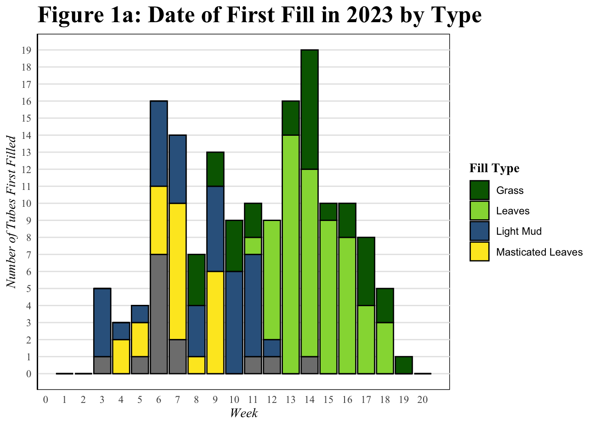
# c("#FDE725FF","#29AF7FFF","#95D840FF","#33638DFF","#481567FF", "#DCE319FF")New Sophia Code
##################Sophias Data Project#####################################
# Faceting the first fill graphs
library(dplyr)
library(ggplot2)
library(tidyverse)
fill_2023<- data|>
mutate(
Fill_Type = ifelse(Fill_Type == "WhiteDebris", "Debris", Fill_Type),
Fill_Type = ifelse(Fill_Type == "Masticated Leaves", "Masticated_Leaves", Fill_Type),
Fill_Type = ifelse(Fill_Type == "Light Mud", "Light_Mud", Fill_Type))
fill_2023_cleaned <- fill_2023 |>
mutate(Year = 2023,
Number_of_Tubes_First_Filled = ifelse(is.na(Number_of_Tubes_First_Filled), 0, Number_of_Tubes_First_Filled))
fill_2024=read.csv("Data Analysis/Week_of_First_FIll_for_CSV - Sheet1.csv")
fill_2024_cleaned <- fill_2024 |>
mutate(Number_of_Tubes_First_Filled = Number_of_Tubes_First.Filled,
Number_of_Tubes_First_Filled = ifelse(is.na(Number_of_Tubes_First_Filled), 0, Number_of_Tubes_First_Filled),
Year = 2024)|>
select(Week, Year, Number_of_Tubes_First_Filled, Fill_Type)
fill_2025_clean=read.csv("Data Analysis/Week_of_First_FIll_2025 - 2026_cleaned.csv")
fill_2025_cleaned <- fill_2025_clean|>
mutate(Year = 2025,
Number_of_Tubes_First_Filled = Number_of_Tubes_First.Filled,
Number_of_Tubes_First_Filled = ifelse(is.na(Number_of_Tubes_First_Filled), 0, Number_of_Tubes_First_Filled))|>
select(Week, Year, Number_of_Tubes_First_Filled, Fill_Type)
combined_df <- bind_rows(fill_2023_cleaned, fill_2024_cleaned, fill_2025_cleaned)
view(combined_df)
names(combined_df)[1] "Week" "Fill_Type"
[3] "Number_of_Tubes_First_Filled" "Year" combined_df<- combined_df|>
mutate(
Fill_Type = recode(Fill_Type,
"Leaves" = "Leaves",
"Intact_Leaves" = "Leaves" # combine here
))|>
filter(
!is.na(Fill_Type)
)
combined_df$Fill_Type <- factor(combined_df$Fill_Type,
levels = c("Debris", "Silk", "Grass", "Light_Mud", "Leaves",
"Masticated_Leaves"))
combined_df<- combined_df|>
filter(
!is.na(Fill_Type)
)
#Descriptive Stats
## Find total fill regardless of fill type for each week in each year
per_week_by_yr_stats<- combined_df|>
group_by(Year, Week)|>
summarise(
fill_per_week = sum(Number_of_Tubes_First_Filled)
)`summarise()` has regrouped the output.
ℹ Summaries were computed grouped by Year and Week.
ℹ Output is grouped by Year.
ℹ Use `summarise(.groups = "drop_last")` to silence this message.
ℹ Use `summarise(.by = c(Year, Week))` for per-operation grouping
(`?dplyr::dplyr_by`) instead.##Find the average fill in those weeks
averages<- per_week_by_yr_stats|>
group_by(Year)|>
summarise(
avg = mean(fill_per_week)
)
print(averages)# A tibble: 3 × 2
Year avg
<dbl> <dbl>
1 2023 7.95
2 2024 7
3 2025 9.84mean(averages$avg)[1] 8.264035#Plot
ggplot(combined_df, aes(x=Week, y=Number_of_Tubes_First_Filled,fill=Fill_Type)) +
facet_wrap(~Year, scales = "free_x")+
scale_fill_manual(values = my_colors, labels = my_labels) +
# scale_fill_viridis_d() +
labs(title = " Timing of First Fill by Year", x = "Week", y = "Number of Tubes First Filled", fill = "Fill Type") +
geom_bar(position="stack", stat="identity", color = "black", width = 1) +
#For scaling the tickmarks along the axes
scale_x_continuous(breaks=seq(0,20,by=2)) +
scale_y_continuous(breaks=seq(0,20,by=2))+
theme_minimal() +
mythemeWarning: `position_stack()` requires non-overlapping x intervals.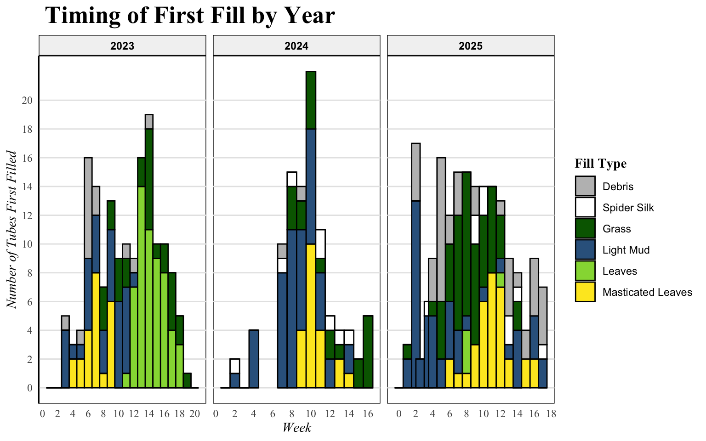
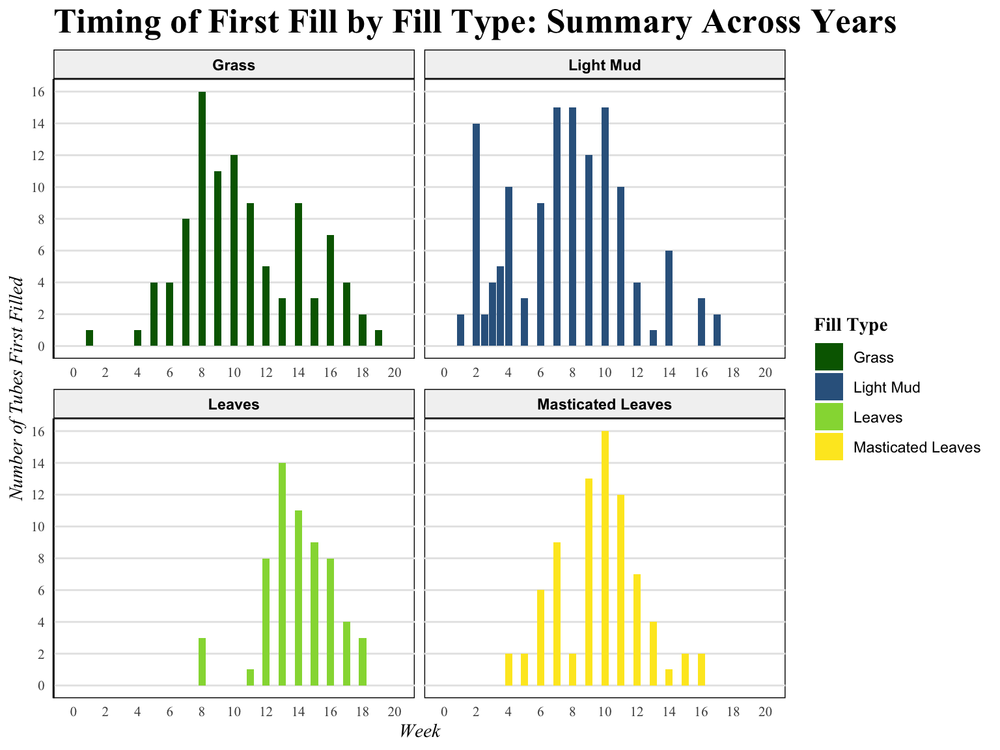
#Descriptive Stats: Number of Major Fill Types
combined_df_no_na<- combined_df|>
filter(!is.na(Number_of_Tubes_First_Filled))
combined_df_no_na Week Fill_Type Number_of_Tubes_First_Filled Year
1 1.0 Debris 0 2023
2 1.0 Masticated_Leaves 0 2023
3 1.0 Light_Mud 0 2023
4 1.0 Leaves 0 2023
5 1.0 Grass 0 2023
6 2.0 Debris 0 2023
7 2.0 Masticated_Leaves 0 2023
8 2.0 Light_Mud 0 2023
9 2.0 Leaves 0 2023
10 2.0 Grass 0 2023
11 3.0 Debris 1 2023
12 3.0 Masticated_Leaves 0 2023
13 3.0 Light_Mud 4 2023
14 3.0 Leaves 0 2023
15 3.0 Grass 0 2023
16 4.0 Debris 0 2023
17 4.0 Masticated_Leaves 2 2023
18 4.0 Light_Mud 1 2023
19 4.0 Leaves 0 2023
20 4.0 Grass 0 2023
21 5.0 Debris 1 2023
22 5.0 Masticated_Leaves 2 2023
23 5.0 Light_Mud 1 2023
24 5.0 Leaves 0 2023
25 5.0 Grass 0 2023
26 6.0 Debris 7 2023
27 6.0 Masticated_Leaves 4 2023
28 6.0 Light_Mud 5 2023
29 6.0 Leaves 0 2023
30 6.0 Grass 0 2023
31 7.0 Debris 2 2023
32 7.0 Masticated_Leaves 8 2023
33 7.0 Light_Mud 4 2023
34 7.0 Leaves 0 2023
35 7.0 Grass 0 2023
36 8.0 Debris 0 2023
37 8.0 Masticated_Leaves 1 2023
38 8.0 Light_Mud 3 2023
39 8.0 Leaves 0 2023
40 8.0 Grass 3 2023
41 9.0 Debris 0 2023
42 9.0 Masticated_Leaves 6 2023
43 9.0 Light_Mud 5 2023
44 9.0 Leaves 0 2023
45 9.0 Grass 2 2023
46 10.0 Debris 0 2023
47 10.0 Masticated_Leaves 0 2023
48 10.0 Light_Mud 6 2023
49 10.0 Leaves 0 2023
50 10.0 Grass 3 2023
51 11.0 Debris 1 2023
52 11.0 Masticated_Leaves 0 2023
53 11.0 Light_Mud 6 2023
54 11.0 Leaves 1 2023
55 11.0 Grass 2 2023
56 12.0 Debris 1 2023
57 12.0 Masticated_Leaves 0 2023
58 12.0 Light_Mud 1 2023
59 12.0 Leaves 7 2023
60 12.0 Grass 0 2023
61 13.0 Debris 0 2023
62 13.0 Masticated_Leaves 0 2023
63 13.0 Light_Mud 0 2023
64 13.0 Leaves 14 2023
65 13.0 Grass 2 2023
66 14.0 Debris 1 2023
67 14.0 Masticated_Leaves 0 2023
68 14.0 Light_Mud 0 2023
69 14.0 Leaves 11 2023
70 14.0 Grass 7 2023
71 15.0 Debris 0 2023
72 15.0 Masticated_Leaves 0 2023
73 15.0 Light_Mud 0 2023
74 15.0 Leaves 9 2023
75 15.0 Grass 1 2023
76 16.0 Debris 0 2023
77 16.0 Masticated_Leaves 0 2023
78 16.0 Light_Mud 0 2023
79 16.0 Leaves 8 2023
80 16.0 Grass 2 2023
81 17.0 Debris 0 2023
82 17.0 Masticated_Leaves 0 2023
83 17.0 Light_Mud 0 2023
84 17.0 Leaves 4 2023
85 17.0 Grass 4 2023
86 18.0 Debris 0 2023
87 18.0 Masticated_Leaves 0 2023
88 18.0 Light_Mud 0 2023
89 18.0 Leaves 3 2023
90 18.0 Grass 2 2023
91 19.0 Debris 0 2023
92 19.0 Masticated_Leaves 0 2023
93 19.0 Light_Mud 0 2023
94 19.0 Leaves 0 2023
95 19.0 Grass 1 2023
96 20.0 Debris 0 2023
97 20.0 Masticated_Leaves 0 2023
98 20.0 Light_Mud 0 2023
99 20.0 Leaves 0 2023
100 20.0 Grass 0 2023
101 1.0 Masticated_Leaves 0 2024
102 1.0 Light_Mud 0 2024
103 1.0 Grass 0 2024
104 1.0 Silk 0 2024
105 1.0 Debris 0 2024
106 2.0 Masticated_Leaves 0 2024
107 2.0 Light_Mud 1 2024
108 2.0 Grass 0 2024
109 2.0 Silk 1 2024
110 2.0 Debris 0 2024
111 3.0 Masticated_Leaves 0 2024
112 3.0 Light_Mud 0 2024
113 3.0 Grass 0 2024
114 3.0 Silk 0 2024
115 3.0 Debris 0 2024
116 4.0 Masticated_Leaves 0 2024
117 4.0 Light_Mud 4 2024
118 4.0 Grass 0 2024
119 4.0 Silk 0 2024
120 4.0 Debris 0 2024
121 7.0 Masticated_Leaves 0 2024
122 7.0 Light_Mud 8 2024
123 7.0 Grass 0 2024
124 7.0 Silk 1 2024
125 7.0 Debris 1 2024
126 8.0 Masticated_Leaves 0 2024
127 8.0 Light_Mud 11 2024
128 8.0 Grass 3 2024
129 8.0 Silk 1 2024
130 8.0 Debris 0 2024
131 9.0 Masticated_Leaves 4 2024
132 9.0 Light_Mud 7 2024
133 9.0 Grass 2 2024
134 9.0 Silk 0 2024
135 9.0 Debris 1 2024
136 10.0 Masticated_Leaves 10 2024
137 10.0 Light_Mud 8 2024
138 10.0 Grass 4 2024
139 10.0 Silk 0 2024
140 10.0 Debris 0 2024
141 11.0 Masticated_Leaves 4 2024
142 11.0 Light_Mud 4 2024
143 11.0 Grass 1 2024
144 11.0 Silk 2 2024
145 11.0 Debris 0 2024
146 12.0 Masticated_Leaves 0 2024
147 12.0 Light_Mud 2 2024
148 12.0 Grass 2 2024
149 12.0 Silk 1 2024
150 12.0 Debris 0 2024
151 13.0 Masticated_Leaves 2 2024
152 13.0 Light_Mud 0 2024
153 13.0 Grass 1 2024
154 13.0 Silk 1 2024
155 13.0 Debris 0 2024
156 14.0 Masticated_Leaves 1 2024
157 14.0 Light_Mud 2 2024
158 14.0 Grass 0 2024
159 14.0 Silk 1 2024
160 14.0 Debris 0 2024
161 15.0 Masticated_Leaves 0 2024
162 15.0 Light_Mud 0 2024
163 15.0 Grass 2 2024
164 15.0 Silk 0 2024
165 15.0 Debris 0 2024
166 16.0 Masticated_Leaves 0 2024
167 16.0 Light_Mud 0 2024
168 16.0 Grass 5 2024
169 16.0 Silk 0 2024
170 16.0 Debris 0 2024
171 0.0 Masticated_Leaves 0 2025
172 0.0 Leaves 0 2025
173 0.0 Light_Mud 0 2025
174 0.0 Grass 0 2025
175 0.0 Silk 0 2025
176 0.0 Debris 0 2025
177 1.0 Masticated_Leaves 0 2025
178 1.0 Leaves 0 2025
179 1.0 Light_Mud 2 2025
180 1.0 Grass 1 2025
181 1.0 Silk 0 2025
182 1.0 Debris 0 2025
183 2.0 Masticated_Leaves 0 2025
184 2.0 Leaves 0 2025
185 2.0 Light_Mud 13 2025
186 2.0 Grass 0 2025
187 2.0 Silk 0 2025
188 2.0 Debris 4 2025
189 2.5 Masticated_Leaves 0 2025
190 2.5 Leaves 0 2025
191 2.5 Light_Mud 2 2025
192 2.5 Grass 0 2025
193 2.5 Silk 0 2025
194 2.5 Debris 0 2025
195 3.5 Masticated_Leaves 0 2025
196 3.5 Leaves 0 2025
197 3.5 Light_Mud 5 2025
198 3.5 Grass 0 2025
199 3.5 Silk 1 2025
200 3.5 Debris 0 2025
201 4.0 Masticated_Leaves 0 2025
202 4.0 Leaves 0 2025
203 4.0 Light_Mud 5 2025
204 4.0 Grass 1 2025
205 4.0 Silk 0 2025
206 4.0 Debris 3 2025
207 5.0 Masticated_Leaves 0 2025
208 5.0 Leaves 0 2025
209 5.0 Light_Mud 2 2025
210 5.0 Grass 4 2025
211 5.0 Silk 0 2025
212 5.0 Debris 10 2025
213 6.0 Masticated_Leaves 2 2025
214 6.0 Leaves 0 2025
215 6.0 Light_Mud 4 2025
216 6.0 Grass 4 2025
217 6.0 Silk 0 2025
218 6.0 Debris 2 2025
219 7.0 Masticated_Leaves 1 2025
220 7.0 Leaves 0 2025
221 7.0 Light_Mud 3 2025
222 7.0 Grass 8 2025
223 7.0 Silk 0 2025
224 7.0 Debris 3 2025
225 8.0 Masticated_Leaves 1 2025
226 8.0 Leaves 3 2025
227 8.0 Light_Mud 1 2025
228 8.0 Grass 10 2025
229 8.0 Silk 0 2025
230 8.0 Debris 0 2025
231 9.0 Masticated_Leaves 3 2025
232 9.0 Leaves 0 2025
233 9.0 Light_Mud 0 2025
234 9.0 Grass 7 2025
235 9.0 Silk 2 2025
236 9.0 Debris 2 2025
237 10.0 Masticated_Leaves 6 2025
238 10.0 Leaves 0 2025
239 10.0 Light_Mud 1 2025
240 10.0 Grass 5 2025
241 10.0 Silk 2 2025
242 10.0 Debris 0 2025
243 11.0 Masticated_Leaves 8 2025
244 11.0 Leaves 0 2025
245 11.0 Light_Mud 0 2025
246 11.0 Grass 6 2025
247 11.0 Silk 0 2025
248 11.0 Debris 0 2025
249 12.0 Masticated_Leaves 7 2025
250 12.0 Leaves 1 2025
251 12.0 Light_Mud 1 2025
252 12.0 Grass 3 2025
253 12.0 Silk 0 2025
254 12.0 Debris 1 2025
255 13.0 Masticated_Leaves 2 2025
256 13.0 Leaves 0 2025
257 13.0 Light_Mud 1 2025
258 13.0 Grass 0 2025
259 13.0 Silk 2 2025
260 13.0 Debris 4 2025
261 14.0 Masticated_Leaves 0 2025
262 14.0 Leaves 0 2025
263 14.0 Light_Mud 4 2025
264 14.0 Grass 2 2025
265 14.0 Silk 1 2025
266 14.0 Debris 1 2025
267 15.0 Masticated_Leaves 2 2025
268 15.0 Leaves 0 2025
269 15.0 Light_Mud 0 2025
270 15.0 Grass 0 2025
271 15.0 Silk 0 2025
272 15.0 Debris 2 2025
273 16.0 Masticated_Leaves 2 2025
274 16.0 Leaves 0 2025
275 16.0 Light_Mud 3 2025
276 16.0 Grass 0 2025
277 16.0 Silk 0 2025
278 16.0 Debris 4 2025
279 17.0 Masticated_Leaves 0 2025
280 17.0 Leaves 0 2025
281 17.0 Light_Mud 2 2025
282 17.0 Grass 0 2025
283 17.0 Silk 1 2025
284 17.0 Debris 4 2025total_filled <- sum(combined_df_no_na$Number_of_Tubes_First_Filled)
grass<- sum(combined_df_no_na$Number_of_Tubes_First_Filled[Fill_Type == "Grass"])
leaves<- sum(combined_df_no_na$Number_of_Tubes_First_Filled[Fill_Type == "Leaves"])
# light_mud<- sum(combined_df_no_na$Number_of_Tubes_First_Filled[Fill_Type == "Light_Mud"])
# mast_leaves<- sum(combined_df_no_na$Number_of_Tubes_First_Filled[Fill_Type == "Masticated_Leaves"])
combined_df_no_na Week Fill_Type Number_of_Tubes_First_Filled Year
1 1.0 Debris 0 2023
2 1.0 Masticated_Leaves 0 2023
3 1.0 Light_Mud 0 2023
4 1.0 Leaves 0 2023
5 1.0 Grass 0 2023
6 2.0 Debris 0 2023
7 2.0 Masticated_Leaves 0 2023
8 2.0 Light_Mud 0 2023
9 2.0 Leaves 0 2023
10 2.0 Grass 0 2023
11 3.0 Debris 1 2023
12 3.0 Masticated_Leaves 0 2023
13 3.0 Light_Mud 4 2023
14 3.0 Leaves 0 2023
15 3.0 Grass 0 2023
16 4.0 Debris 0 2023
17 4.0 Masticated_Leaves 2 2023
18 4.0 Light_Mud 1 2023
19 4.0 Leaves 0 2023
20 4.0 Grass 0 2023
21 5.0 Debris 1 2023
22 5.0 Masticated_Leaves 2 2023
23 5.0 Light_Mud 1 2023
24 5.0 Leaves 0 2023
25 5.0 Grass 0 2023
26 6.0 Debris 7 2023
27 6.0 Masticated_Leaves 4 2023
28 6.0 Light_Mud 5 2023
29 6.0 Leaves 0 2023
30 6.0 Grass 0 2023
31 7.0 Debris 2 2023
32 7.0 Masticated_Leaves 8 2023
33 7.0 Light_Mud 4 2023
34 7.0 Leaves 0 2023
35 7.0 Grass 0 2023
36 8.0 Debris 0 2023
37 8.0 Masticated_Leaves 1 2023
38 8.0 Light_Mud 3 2023
39 8.0 Leaves 0 2023
40 8.0 Grass 3 2023
41 9.0 Debris 0 2023
42 9.0 Masticated_Leaves 6 2023
43 9.0 Light_Mud 5 2023
44 9.0 Leaves 0 2023
45 9.0 Grass 2 2023
46 10.0 Debris 0 2023
47 10.0 Masticated_Leaves 0 2023
48 10.0 Light_Mud 6 2023
49 10.0 Leaves 0 2023
50 10.0 Grass 3 2023
51 11.0 Debris 1 2023
52 11.0 Masticated_Leaves 0 2023
53 11.0 Light_Mud 6 2023
54 11.0 Leaves 1 2023
55 11.0 Grass 2 2023
56 12.0 Debris 1 2023
57 12.0 Masticated_Leaves 0 2023
58 12.0 Light_Mud 1 2023
59 12.0 Leaves 7 2023
60 12.0 Grass 0 2023
61 13.0 Debris 0 2023
62 13.0 Masticated_Leaves 0 2023
63 13.0 Light_Mud 0 2023
64 13.0 Leaves 14 2023
65 13.0 Grass 2 2023
66 14.0 Debris 1 2023
67 14.0 Masticated_Leaves 0 2023
68 14.0 Light_Mud 0 2023
69 14.0 Leaves 11 2023
70 14.0 Grass 7 2023
71 15.0 Debris 0 2023
72 15.0 Masticated_Leaves 0 2023
73 15.0 Light_Mud 0 2023
74 15.0 Leaves 9 2023
75 15.0 Grass 1 2023
76 16.0 Debris 0 2023
77 16.0 Masticated_Leaves 0 2023
78 16.0 Light_Mud 0 2023
79 16.0 Leaves 8 2023
80 16.0 Grass 2 2023
81 17.0 Debris 0 2023
82 17.0 Masticated_Leaves 0 2023
83 17.0 Light_Mud 0 2023
84 17.0 Leaves 4 2023
85 17.0 Grass 4 2023
86 18.0 Debris 0 2023
87 18.0 Masticated_Leaves 0 2023
88 18.0 Light_Mud 0 2023
89 18.0 Leaves 3 2023
90 18.0 Grass 2 2023
91 19.0 Debris 0 2023
92 19.0 Masticated_Leaves 0 2023
93 19.0 Light_Mud 0 2023
94 19.0 Leaves 0 2023
95 19.0 Grass 1 2023
96 20.0 Debris 0 2023
97 20.0 Masticated_Leaves 0 2023
98 20.0 Light_Mud 0 2023
99 20.0 Leaves 0 2023
100 20.0 Grass 0 2023
101 1.0 Masticated_Leaves 0 2024
102 1.0 Light_Mud 0 2024
103 1.0 Grass 0 2024
104 1.0 Silk 0 2024
105 1.0 Debris 0 2024
106 2.0 Masticated_Leaves 0 2024
107 2.0 Light_Mud 1 2024
108 2.0 Grass 0 2024
109 2.0 Silk 1 2024
110 2.0 Debris 0 2024
111 3.0 Masticated_Leaves 0 2024
112 3.0 Light_Mud 0 2024
113 3.0 Grass 0 2024
114 3.0 Silk 0 2024
115 3.0 Debris 0 2024
116 4.0 Masticated_Leaves 0 2024
117 4.0 Light_Mud 4 2024
118 4.0 Grass 0 2024
119 4.0 Silk 0 2024
120 4.0 Debris 0 2024
121 7.0 Masticated_Leaves 0 2024
122 7.0 Light_Mud 8 2024
123 7.0 Grass 0 2024
124 7.0 Silk 1 2024
125 7.0 Debris 1 2024
126 8.0 Masticated_Leaves 0 2024
127 8.0 Light_Mud 11 2024
128 8.0 Grass 3 2024
129 8.0 Silk 1 2024
130 8.0 Debris 0 2024
131 9.0 Masticated_Leaves 4 2024
132 9.0 Light_Mud 7 2024
133 9.0 Grass 2 2024
134 9.0 Silk 0 2024
135 9.0 Debris 1 2024
136 10.0 Masticated_Leaves 10 2024
137 10.0 Light_Mud 8 2024
138 10.0 Grass 4 2024
139 10.0 Silk 0 2024
140 10.0 Debris 0 2024
141 11.0 Masticated_Leaves 4 2024
142 11.0 Light_Mud 4 2024
143 11.0 Grass 1 2024
144 11.0 Silk 2 2024
145 11.0 Debris 0 2024
146 12.0 Masticated_Leaves 0 2024
147 12.0 Light_Mud 2 2024
148 12.0 Grass 2 2024
149 12.0 Silk 1 2024
150 12.0 Debris 0 2024
151 13.0 Masticated_Leaves 2 2024
152 13.0 Light_Mud 0 2024
153 13.0 Grass 1 2024
154 13.0 Silk 1 2024
155 13.0 Debris 0 2024
156 14.0 Masticated_Leaves 1 2024
157 14.0 Light_Mud 2 2024
158 14.0 Grass 0 2024
159 14.0 Silk 1 2024
160 14.0 Debris 0 2024
161 15.0 Masticated_Leaves 0 2024
162 15.0 Light_Mud 0 2024
163 15.0 Grass 2 2024
164 15.0 Silk 0 2024
165 15.0 Debris 0 2024
166 16.0 Masticated_Leaves 0 2024
167 16.0 Light_Mud 0 2024
168 16.0 Grass 5 2024
169 16.0 Silk 0 2024
170 16.0 Debris 0 2024
171 0.0 Masticated_Leaves 0 2025
172 0.0 Leaves 0 2025
173 0.0 Light_Mud 0 2025
174 0.0 Grass 0 2025
175 0.0 Silk 0 2025
176 0.0 Debris 0 2025
177 1.0 Masticated_Leaves 0 2025
178 1.0 Leaves 0 2025
179 1.0 Light_Mud 2 2025
180 1.0 Grass 1 2025
181 1.0 Silk 0 2025
182 1.0 Debris 0 2025
183 2.0 Masticated_Leaves 0 2025
184 2.0 Leaves 0 2025
185 2.0 Light_Mud 13 2025
186 2.0 Grass 0 2025
187 2.0 Silk 0 2025
188 2.0 Debris 4 2025
189 2.5 Masticated_Leaves 0 2025
190 2.5 Leaves 0 2025
191 2.5 Light_Mud 2 2025
192 2.5 Grass 0 2025
193 2.5 Silk 0 2025
194 2.5 Debris 0 2025
195 3.5 Masticated_Leaves 0 2025
196 3.5 Leaves 0 2025
197 3.5 Light_Mud 5 2025
198 3.5 Grass 0 2025
199 3.5 Silk 1 2025
200 3.5 Debris 0 2025
201 4.0 Masticated_Leaves 0 2025
202 4.0 Leaves 0 2025
203 4.0 Light_Mud 5 2025
204 4.0 Grass 1 2025
205 4.0 Silk 0 2025
206 4.0 Debris 3 2025
207 5.0 Masticated_Leaves 0 2025
208 5.0 Leaves 0 2025
209 5.0 Light_Mud 2 2025
210 5.0 Grass 4 2025
211 5.0 Silk 0 2025
212 5.0 Debris 10 2025
213 6.0 Masticated_Leaves 2 2025
214 6.0 Leaves 0 2025
215 6.0 Light_Mud 4 2025
216 6.0 Grass 4 2025
217 6.0 Silk 0 2025
218 6.0 Debris 2 2025
219 7.0 Masticated_Leaves 1 2025
220 7.0 Leaves 0 2025
221 7.0 Light_Mud 3 2025
222 7.0 Grass 8 2025
223 7.0 Silk 0 2025
224 7.0 Debris 3 2025
225 8.0 Masticated_Leaves 1 2025
226 8.0 Leaves 3 2025
227 8.0 Light_Mud 1 2025
228 8.0 Grass 10 2025
229 8.0 Silk 0 2025
230 8.0 Debris 0 2025
231 9.0 Masticated_Leaves 3 2025
232 9.0 Leaves 0 2025
233 9.0 Light_Mud 0 2025
234 9.0 Grass 7 2025
235 9.0 Silk 2 2025
236 9.0 Debris 2 2025
237 10.0 Masticated_Leaves 6 2025
238 10.0 Leaves 0 2025
239 10.0 Light_Mud 1 2025
240 10.0 Grass 5 2025
241 10.0 Silk 2 2025
242 10.0 Debris 0 2025
243 11.0 Masticated_Leaves 8 2025
244 11.0 Leaves 0 2025
245 11.0 Light_Mud 0 2025
246 11.0 Grass 6 2025
247 11.0 Silk 0 2025
248 11.0 Debris 0 2025
249 12.0 Masticated_Leaves 7 2025
250 12.0 Leaves 1 2025
251 12.0 Light_Mud 1 2025
252 12.0 Grass 3 2025
253 12.0 Silk 0 2025
254 12.0 Debris 1 2025
255 13.0 Masticated_Leaves 2 2025
256 13.0 Leaves 0 2025
257 13.0 Light_Mud 1 2025
258 13.0 Grass 0 2025
259 13.0 Silk 2 2025
260 13.0 Debris 4 2025
261 14.0 Masticated_Leaves 0 2025
262 14.0 Leaves 0 2025
263 14.0 Light_Mud 4 2025
264 14.0 Grass 2 2025
265 14.0 Silk 1 2025
266 14.0 Debris 1 2025
267 15.0 Masticated_Leaves 2 2025
268 15.0 Leaves 0 2025
269 15.0 Light_Mud 0 2025
270 15.0 Grass 0 2025
271 15.0 Silk 0 2025
272 15.0 Debris 2 2025
273 16.0 Masticated_Leaves 2 2025
274 16.0 Leaves 0 2025
275 16.0 Light_Mud 3 2025
276 16.0 Grass 0 2025
277 16.0 Silk 0 2025
278 16.0 Debris 4 2025
279 17.0 Masticated_Leaves 0 2025
280 17.0 Leaves 0 2025
281 17.0 Light_Mud 2 2025
282 17.0 Grass 0 2025
283 17.0 Silk 1 2025
284 17.0 Debris 4 2025unique(combined_df$Fill_Type)[1] Debris Masticated_Leaves Light_Mud Leaves
[5] Grass Silk
Levels: Debris Silk Grass Light_Mud Leaves Masticated_Leaveslight_mud <- combined_df_no_na %>%
filter(Fill_Type == "Light_Mud") %>%
summarise(
mySum = sum(Number_of_Tubes_First_Filled)
) %>%
pull(mySum)
mast_leaves<- combined_df_no_na %>%
filter(Fill_Type == "Masticated_Leaves") %>%
summarise(
mySum = sum(Number_of_Tubes_First_Filled)
) %>%
pull(mySum)
combined_df_no_na$Number_of_Tubes_First_Filled[Fill_Type == "Light_Mud"] [1] 0 0 4 1 1 5 4 3 5 6 6 1 0 0 0 0 0 0 0 0 0 0 0 0 0
[26] 3 2 4 1 2 1 0 2 5 0 0 0 4 0 0 5 0 2 2 0 10 0 0 8 0
[51] 0 0 4 0 2 4 1stats<- combined_df_no_na |>
summarise(
percent_grass = grass / total_filled,
percent_leaves = leaves/total_filled,
percent_lm = light_mud/total_filled,
percent_ml = mast_leaves/total_filled
)
stats percent_grass percent_leaves percent_lm percent_ml
1 0.1621622 0.222973 0.2972973 0.1756757# By Year
# 1. Total per Year
year_totals <- combined_df_no_na |>
group_by(Year) |>
summarise(
total_filled = sum(Number_of_Tubes_First_Filled),
.groups = "drop"
)
# 2. Totals per Year + Fill_Type
type_totals <- combined_df_no_na |>
group_by(Year, Fill_Type) |>
summarise(
type_total = sum(Number_of_Tubes_First_Filled),
.groups = "drop"
)
# 3. Join + compute percentages
stats_by_year <- type_totals |>
left_join(year_totals, by = "Year") |>
mutate(
percent = type_total / total_filled
)
stats_by_year# A tibble: 16 × 5
Year Fill_Type type_total total_filled percent
<dbl> <fct> <dbl> <dbl> <dbl>
1 2023 Debris 14 159 0.0881
2 2023 Grass 29 159 0.182
3 2023 Light_Mud 36 159 0.226
4 2023 Leaves 57 159 0.358
5 2023 Masticated_Leaves 23 159 0.145
6 2024 Debris 2 98 0.0204
7 2024 Silk 8 98 0.0816
8 2024 Grass 20 98 0.204
9 2024 Light_Mud 47 98 0.480
10 2024 Masticated_Leaves 21 98 0.214
11 2025 Debris 40 187 0.214
12 2025 Silk 9 187 0.0481
13 2025 Grass 51 187 0.273
14 2025 Light_Mud 49 187 0.262
15 2025 Leaves 4 187 0.0214
16 2025 Masticated_Leaves 34 187 0.182 library(tidyverse)
#install.packages("janitor")
library(janitor)
Attaching package: 'janitor'The following objects are masked from 'package:stats':
chisq.test, fisher.testlibrary(ggthemes)
# =========================================================
# READ DATA
# =========================================================
fill_2023 <- read.csv("Data Analysis/2023_bee tube first fill data_no WF.csv") %>%
clean_names() %>%
na.omit()
fill_2024 <- read.csv("Data Analysis/Week_of_First_FIll_for_CSV - Sheet1.csv") %>%
clean_names()
fill_2025 <- read.csv("Data Analysis/Week_of_First_Fill_2025 - Sheet1.csv") %>%
clean_names()
# =========================================================
# STANDARDIZE COLUMN NAMES (CRITICAL FIX)
# =========================================================
library(tidyverse)
library(janitor)
standardize <- function(df, year_label) {
df <- clean_names(df)
# Identify possible fill column
fill_col <- names(df)[str_detect(names(df), "fill")][1]
# Only rename IF needed
if (fill_col != "number_of_tubes_first_filled") {
df <- df %>%
rename(number_of_tubes_first_filled = all_of(fill_col))
}
# Same logic for week column
week_col <- names(df)[str_detect(names(df), "week")][1]
if (week_col != "week") {
df <- df %>%
rename(week = all_of(week_col))
}
df %>%
mutate(
year = year_label,
number_of_tubes_first_filled =
replace_na(number_of_tubes_first_filled, 0)
) %>%
select(year, week, number_of_tubes_first_filled)
}Christopher’s Work
library(tidyverse)
#Create cummulative for each year
fill_2023_cum <- fill_2023_cleaned |>
mutate(cum_sum = cumsum(Number_of_Tubes_First_Filled))
fill_2024_cum <- fill_2024_cleaned |>
mutate(cum_sum = cumsum(Number_of_Tubes_First_Filled))
fill_2025_clean_cum <- fill_2025_cleaned |>
mutate(
cum_sum = cumsum(Number_of_Tubes_First_Filled)
)
###By Fill
fill_2023_cum_fill <- fill_2023_cleaned |>
group_by(Fill_Type)|>
mutate(cum_sum = cumsum(Number_of_Tubes_First_Filled))
fill_2024_cum_fill <- fill_2024_cleaned |>
group_by(Fill_Type)|>
mutate(cum_sum = cumsum(Number_of_Tubes_First_Filled))
fill_2025_clean_cum_fill <- fill_2025_cleaned |>
group_by(Fill_Type)|>
mutate(
cum_sum = cumsum(Number_of_Tubes_First_Filled)
)
#Join Cumulative Dataframes
full_cum <- bind_rows(fill_2023_cum, fill_2024_cum, fill_2025_clean_cum)
full_cum_fill <- bind_rows(fill_2023_cum_fill, fill_2024_cum_fill, fill_2025_clean_cum_fill)
#Make leaves and intact leaves the same thing, remove non-cavity nester fill
full_cum_clean <- full_cum |>
mutate(
Fill_Type = recode(Fill_Type,
"Leaves" = "Leaves",
"Intact_Leaves" = "Leaves" # combine here
)
) |>
filter(!Fill_Type %in% c("Silk", "Debris"))
full_cum_clean_fill <- full_cum_fill |>
mutate(
Fill_Type = recode(Fill_Type,
"Leaves" = "Leaves",
"Intact_Leaves" = "Leaves" # combine here
)
) |>
filter(!Fill_Type %in% c("Silk", "Debris"))
bee_fill_comp <- c(
"Grass" = "Grass\n(Grass Wasp)",
"Leaves" = "Leaves\n(Leafcutter Bee)",
"Light_Mud" = "Light Mud\n(Square-headed Wasp, Potter Wasp)",
"Masticated_Leaves" = "Masticated Leaves\n(Leafcutter Bee, Mason Bee)",
"Empty" = "Empty"
)
ggplot(full_cum_clean,
aes(x = Week,
y = cum_sum,
color = factor(Year),
group = Year)) +
geom_smooth()+
labs(
y = "Cumulative Fills",
title = "Cumulative Sums of Fill Types by Year",
color = "Year"
) +
scale_color_manual(
values = c("#FDE725FF", "#29AF7FFF", "#33638DFF"),
labels = c("2023", "2024", "2025")) +
theme_minimal() +
mytheme +
theme(
legend.text = element_text(size = 6)
)`geom_smooth()` using method = 'loess' and formula = 'y ~ x'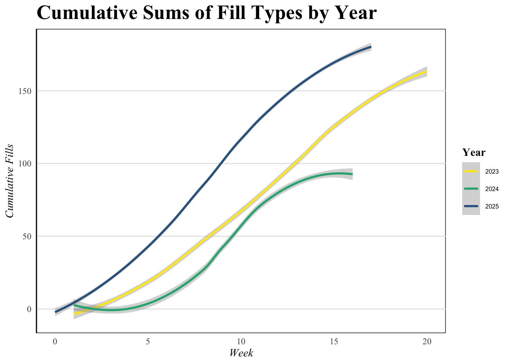
######Trial
ggplot(full_cum_clean_fill,
aes(x = Week,
y = cum_sum,
color = Fill_Type)) +
geom_line(linewidth = 1.2) +
facet_wrap(~Year) +
labs(
y = "Cumulative Fills",
title = "Cumulative Sums of Fill Types by Year",
color = "Fill Type"
) +
scale_color_manual(
values = my_colors,
labels = bee_fill_comp
) +
scale_y_continuous(
breaks = c(10, 20, 30, 40, 50, 60),
limits = c(0, 60)
) +
theme_minimal() +
mytheme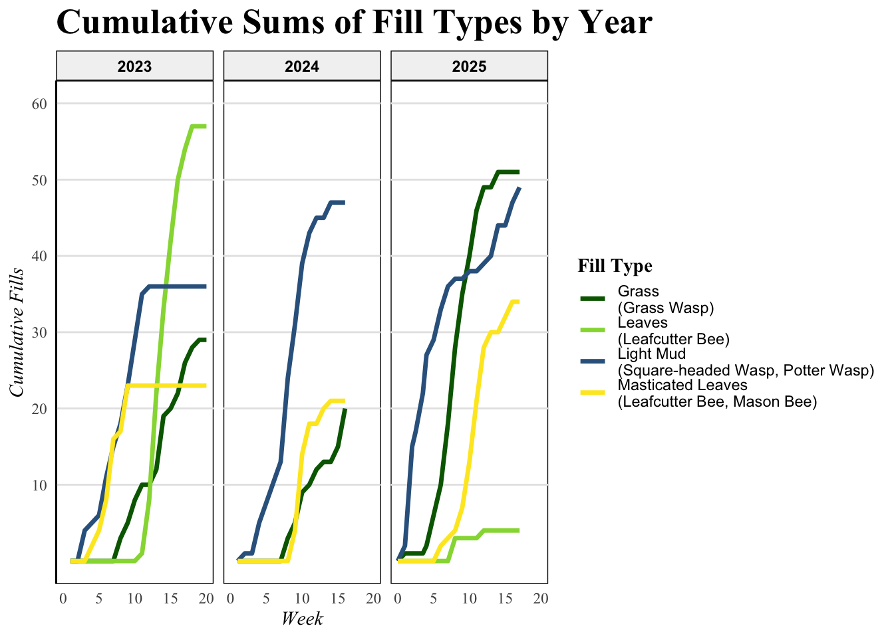
# Descriptive stats
full_cum_sumfills<-
full_cum_clean|>
group_by(Year)|>
summarise(
max_fill = max(cum_sum)
)
full_cum_sumfills# A tibble: 3 × 2
Year max_fill
<dbl> <dbl>
1 2023 159
2 2024 98
3 2025 182ggplot(full_cum_clean,
aes(x = Week, y = cum_sum, fill = Fill_Type)) +
geom_area(position = "identity") +
facet_wrap(~Year)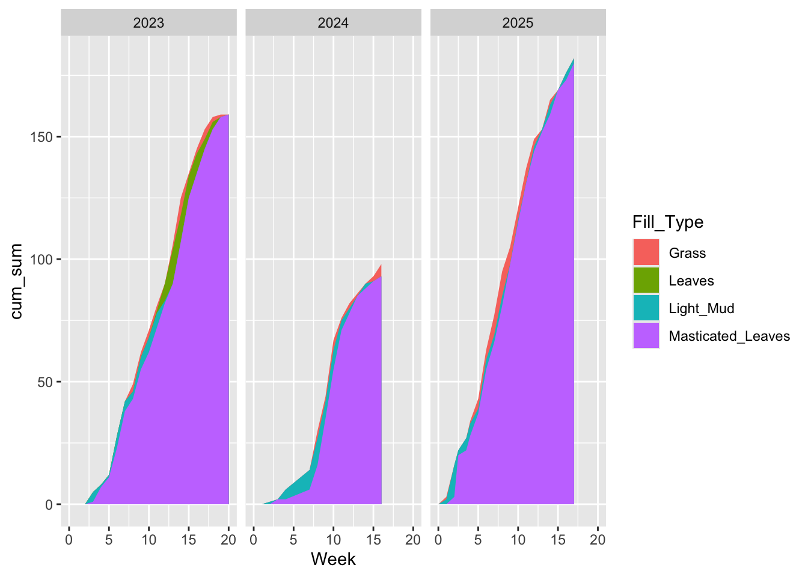
fill_2023_cum %>%
ggplot(aes(x = cum_sum, fill = Fill_Type)) +
geom_density(alpha = 0.5, position = "identity") +
scale_fill_manual(values = my_colors, labels = my_labels) +
theme_minimal() +
mytheme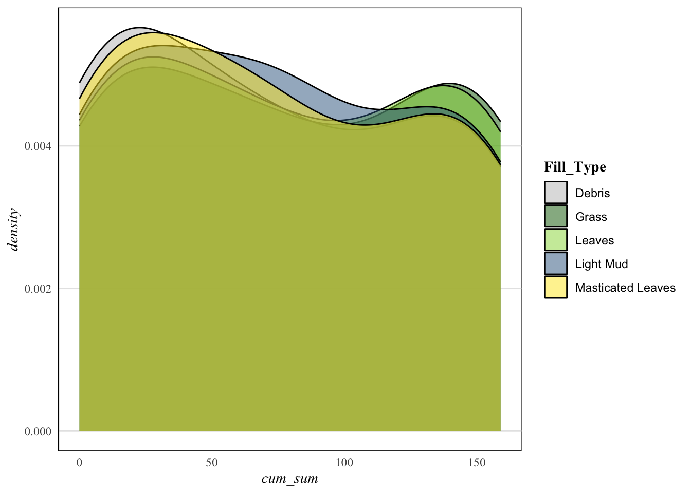
# install.packages("ggridges")
library(ggridges)
# Build the named labels vector from fill_inhabitant_labels
# bee_labels <- fill_inhabitant_labels %>%
# filter(!is.na(Inhabitant)) %>%
# group_by(Fill_Type) %>%
# summarise(
# bee_list = paste(Inhabitant, collapse = ", "),
# .groups = "drop"
# ) %>%
# mutate(
# full_label = paste0(
# gsub("_", " ", Fill_Type), # "Light_Mud" -> "Light Mud"
# "\n(", bee_list, ")"
# )
# ) %>%
# # Named vector: names = Fill_Type levels, values = display labels
# { setNames(.$full_label, .$Fill_Type) }
fill_2023_cum %>%
ggplot(aes(x = cum_sum, y = Fill_Type, fill = Fill_Type)) +
geom_density_ridges(alpha = 0.6, scale = 1.2, show.legend = T) +
labs(
x = "Cumulative Sum",
y = "",
title = "Cumulative Fill Type Comparisons",
fill = "Bee Type(s) by \nFill Type"
) +
scale_fill_manual(values = my_colors, labels = bee_fill_comp) +
theme_minimal() +
mytheme +
theme(
legend.text = element_text(size = 8, lineheight = 0.85),
legend.key.height = unit(1.8, "cm"), # give each key enough vertical room
legend.title = element_text(size = 9, face = "bold")
)Picking joint bandwidth of 28.8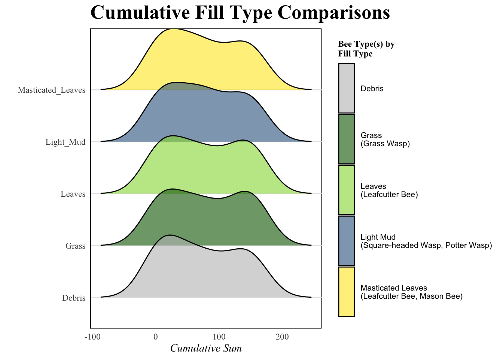
# fill_2023_cum
# fill_inhabitant_labelsID_freq_comp %>%
filter(Fill_Type != "Empty") %>%
ggplot(aes(x = Fill_Type, y = Location, fill = Proportion_of_Fill)) +
geom_tile(color = "white") +
scale_fill_gradient2(
low = "white",
high = "darkgreen",
breaks = c(0,.1,.2,.3)
) +
scale_x_discrete(labels = c("Light_Mud" = "Light Mud",
"Masticated_Leaves" = "Masticated Leaves",
"Intact_Leaves" = "Intact Leaves"))+
labs(
title = "Fill Type Distribution by Location",
x = "Fill Type",
y = "Location",
fill = "Proportion"
) +
theme_minimal() +
mytheme +
theme(
axis.text.x = element_text(angle = 30, hjust = 1)
)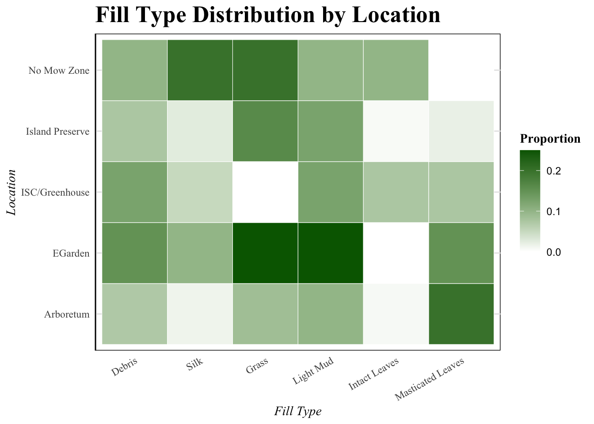
# ?scale_fill_gradientID_freq_comp Location Fill_Type Proportion_of_Fill
1 Arboretum Masticated_Leaves 0.200000000
2 Arboretum Intact_Leaves 0.007142857
3 Arboretum Light_Mud 0.100000000
4 Arboretum Grass 0.085714286
5 Arboretum Silk 0.014285714
6 Arboretum Debris 0.071428571
7 Arboretum Empty 0.521428571
8 EGarden Masticated_Leaves 0.150000000
9 EGarden Intact_Leaves 0.000000000
10 EGarden Light_Mud 0.250000000
11 EGarden Grass 0.250000000
12 EGarden Silk 0.100000000
13 EGarden Debris 0.150000000
14 EGarden Empty 0.100000000
15 ISC/Greenhouse Masticated_Leaves 0.075000000
16 ISC/Greenhouse Intact_Leaves 0.075000000
17 ISC/Greenhouse Light_Mud 0.125000000
18 ISC/Greenhouse Grass 0.000000000
19 ISC/Greenhouse Silk 0.050000000
20 ISC/Greenhouse Debris 0.125000000
21 ISC/Greenhouse Empty 0.550000000
22 Island Preserve Masticated_Leaves 0.018750000
23 Island Preserve Intact_Leaves 0.006250000
24 Island Preserve Light_Mud 0.125000000
25 Island Preserve Grass 0.162500000
26 Island Preserve Silk 0.025000000
27 Island Preserve Debris 0.075000000
28 Island Preserve Empty 0.587500000
29 No Mow Zone Masticated_Leaves 0.000000000
30 No Mow Zone Intact_Leaves 0.100000000
31 No Mow Zone Light_Mud 0.100000000
32 No Mow Zone Grass 0.200000000
33 No Mow Zone Silk 0.200000000
34 No Mow Zone Debris 0.100000000
35 No Mow Zone Empty 0.300000000
Tally.of.Fill Number.Filled Total.Tubes Second.count
1 IIIIIIIIIIIIIIIIIIIIIIIIIIII 28 140 NA
2 I 1 140 NA
3 IIIIIIIIIIIIII 14 140 NA
4 IIIIIIIIIIII 12 140 NA
5 II 2 140 NA
6 IIIIIIIIII 10 140 NA
7 73 140 NA
8 III 3 20 NA
9 0 20 NA
10 IIIII 5 20 NA
11 IIIII 5 20 NA
12 II 2 20 NA
13 III 3 20 NA
14 2 20 NA
15 III 3 40 NA
16 III 3 40 NA
17 IIIII 5 40 NA
18 0 40 NA
19 II 2 40 NA
20 IIIII 5 40 NA
21 22 40 NA
22 II 3 160 3
23 I 1 160 1
24 IIIIIIIIII(10)IIIIIIIII 20 160 20
25 IIIIIIIIII(10)II 26 160 26
26 II 4 160 4
27 IIIIIIIIII(10)II 12 160 12
28 94 160 NA
29 0 20 NA
30 II 2 20 NA
31 II 2 20 NA
32 IIII 4 20 NA
33 IIII 4 20 NA
34 II 2 20 NA
35 6 20 NA
Sample_Size
1 140
2 140
3 140
4 140
5 140
6 140
7 140
8 20
9 20
10 20
11 20
12 20
13 20
14 20
15 40
16 40
17 40
18 40
19 40
20 40
21 40
22 160
23 160
24 160
25 160
26 160
27 160
28 160
29 20
30 20
31 20
32 20
33 20
34 20
35 20